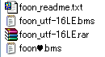
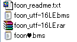

BMS apps:
このドキュメントは便宜的に以下の略称を使用します。 (公称とは異なる可能性があります。)
written by hitkey
references:
| about BMS: | https://en.wikipedia.org/wiki/Be-Music_Source |
|---|---|
| This report referred to: | https://web.archive.org/web/*/http://wiki.bms.ms/Bms:Spec |
| BMS Format Specification: | http://bm98.yaneu.com/bm98/bmsformat.html () |
| Basic specification of BML: | https://nvyu.net/rdm/rby_ex.php |
| BMS extensions proposed by Sonorous: | https://cosmic.mearie.org/f/sonorous/bmsexts ( から) (参考資料として) |
| DTX file format specifications: | http://dtxmania.net/wiki.cgi?page=qa_dtx_spec_e (参考資料として) |
| Guide to understand BMS format: | https://cosmic.mearie.org/2005/03/bmsguide/ () (参考資料として) |
| Angolmois Internals: | https://github.com/lifthrasiir/angolmois/blob/master/INTERNALS.md () (参考資料として) |
| about obsolete MGQ notation: | https://web.archive.org/web/*/http://ivy.pr.co.kr/rdm/jp/extension.htm () (参考資料として) |
| LR2beta3 スキンcsv仕様書 第五版: | http://right-stick.sub.jp/lr2skinhelp.html () (参考資料として) |
caution:
update history:
#VOLWAV をサポートするアプリケーションについて加筆した。#BGA, #POORBGA, #xxx0A (LAYER2)*.lr)
/ #BGA の互換性 (bemaniaDX)#SUBTITLE
/ multi #COMMENT#DEFEXRANK n に TechnicalGroove カラムを加筆した。
/ 私は PMSee-V v2.1.5a () を見逃していた (すまぬ…すまぬ…)#OPTION の全ての値の列挙 (option.htm)#BGA の互換性)#DEFEXRANK 0
/ 副題によるグループ化
/ multi #SUBARTIST
/ fractional #STOP
/ multi #LNOBJ
/ #BGA の互換性＃ENDIF (U+FF03) を加えた。#PATH_WAV に uBMplay を加えた。#OCT/FP を知っていた。<hgroup> is gone#99902:1
/ multiple #xxxA6
/ #RANK n の既定値に関する誤った記述を修正#ExtChr の誤りを修正した。#LNTYPE 2)#ELSEIF,
Indent style,
Comment syntax,
Keyup-sounding#TOTAL の項目を修正した。 (thanks to kisama)このドキュメントは便宜的に以下の略称を使用します。 (公称とは異なる可能性があります。)
仕様の要約:
# から始まる行はコマンド行です。 残りは全て無視されます (コメント用)。この BMS ファイルは実行時にコンパイルされます。したがって、私たちはいかなる行も自由に命じることができます。
しかし、仕様の詳細は実装に依存します。
#LNOBJ XXヘッダ文は、コマンドと値を分割するデリミタとして、1 個の半角空白を使用します。
#header value = # + header + ␣ + valueチャンネル文は、コマンドと値を分割するデリミタとして、1 個の半角コロンを使用します。
#xxxCH:00112233 = # + xxx + CH + :
+ 00 + 11 + 22 + 33xxx: 小節番号 [000-999]CH: チャンネル番号00, 11, 22, 33:
2 文字の英数字のペアから成る、各オブジェクトに対応するインデックス。
| 初期: 16 進数 | 16*16 (256) | [0-9A-Fa-f][0-9A-Fa-f] |
|---|---|---|
| 中期: 限定 36 進数 | 16*36 (576) | [0-9A-Fa-f][0-9A-Za-z] |
| 現在: 36 進数 | 36*36 (1296) | [0-9A-Za-z][0-9A-Za-z] |
00 は休符です。00 以外のインデックスが指すものは、各チャンネルに依存します。
それは #WAVxx か #BMPxx、あるいはそれ以外かもしれません。譜面ファイルは本質的にプレーンテキストです。
拡張子 TXT が BMS に変更されれば、BMS アプリケーションは譜面を認識するでしょう。
多くの日本の BMS アプリケーションは多言語のエンコードをサポートしていません。
BMS コマンドの値が DBCS を含んでいる場合、 値は改竄されるかもしれません (mojibake)。
しかしながら、OS が日本語版 Windows である場合、 Shift_JIS で書かれた DBCS はたまたま正しく表示されます。
ruvit, iBMSC, IIDXv (2.13+), HDX (0.98+), Sonorous, BGAEncAdv, TechnicalGroove は多言語のエンコードをサポートしています。
 

同一のヘッダが重複する場合、EOF に近い側が採用されます:
| remarks | sample BMS code |
|---|---|
| (line number 100) | #TITLE ABC |
| (line number 200) | #TITLE DEF |
この BMS の #TITLE の値は “DEF” です。
#ExtChr, #STP, #WAVCMD, #OPTION,
および制御構文を除く、あらゆるヘッダに適用されます。#SUBTITLE, #SUBARTIST, #COMMENT,
および #LNOBJ に適用されないかもしれません。#xxx02 (小節長) にも適用されます。#xxx02 が重複した場合、ruvit (b5p3 以前) は最初の行を採用します。 (b5p4 にて修正済み)しかしながら、以下のコマンドは例外であり、多少複雑な処理が要求されます。
これらは同一のコマンドを複数行記述することができます:
#ExtChr: [BM98] Extended Character#STP: [bemaniaDX] ストップシーケンス#WAVCMD: [MacBeat] MOD もどき (MOD とは: https://en.wikipedia.org/wiki/MOD_%28file_format%29)#OPTION: [nanasigroove] 強制オプション#SUBTITLE: [nanasigroove] 明示的な副題
/ [Sonorous に限り、多重定義可能]#SUBARTIST: [LunaticRave] 助力者情報
/ [TechnicalGroove と Sonorous に限り、多重定義可能]#COMMENT: [feelingPomu] 選曲画面上の字幕
/ [Sonorous に限り、多重定義可能]#LNOBJ: [Rhythm-it] ロングノート終端定義
/ [TechnicalGroove に限り、LN 終端音声を複数定義可能]制御構文はさらに特別です。BMS の記法では、以下に示すコマンド群だけが、ブロック構造を構成します。
#RANDOM or #SETRANDOM
#IF#ELSEIF#ELSE#ENDIF#ENDRANDOM
#SWITCH or #SETSWITCH
#CASE#SKIP#DEF#ENDSW
同一の小節で同一のチャンネルが重複する場合、両方が合成されます。
#xxx01
(BGM channel), #xxx02 (小節長),
#xxxA6 (#CHANGEOPTION) には適用されません。#xxx02 チャンネル行が競合する場合、EOF に最も近い行が採用されます。行番号が大きい側が優先されます。 しかし、00 は古い場所を上書きしません:
| remarks | sample BMS code | comment |
|---|---|---|
| (行番号 100) | #00113:11111111 |
// 1100110011001100 |
| (行番号 200) | #00113:0022332255224400 |
// #001 のチャンネル 13 が重複 |
| (行番号 300) | #00113:0066 |
// #001 のチャンネル 13 が重複 |
| 構文解析の結果: | #00113:1122332266224400 | // 3 行分がすべて合成される |
これは複雑なリズムを書きやすくするために用意された、BM98k の挙動です。
しかしあいにく、実装の約半数はこの仕様を満たしていません。 ( ... そもそもこれは 「要求仕様」 なのでしょうか ? )
pomu2 にはオブジェの配列を自動的に変更する機能があります。
しかし、チャンネル行が重複する場合、この機能は正常に動作しません。
(元の譜面を 5 回重複させた例: https://hitkey.nekokan.dyndns.info/100418_duplicate_channel_pomu2.png)
BMS パーザは、3 種類の改行コードが混在するファイルを読まなければならないかもしれません。 (CRLF, CR, LF)
BMS パーザは、改行を間に挟まない EOF を読まなければならないかもしれません。
#08401:ZZ[EOF]私たちは、予想よりも多くのインライン EOF を見つけるでしょう。
不正な値が与えられたチャンネル行を、どのように解釈するべきか、仕様は定めていません。
| sample BMS code | remarks |
|---|---|
#00111:0011文字2233 |
// DBCS の混入 |
#00112:0011223 |
// 2 の倍数でないデータ長 |
#00113:+-;$%&'()/ |
// #WAV のインデックスに使用できない特殊文字 |
|
// 長すぎるデータ長 |
#00115:11 ;comment |
// DTX のインラインコメント (GDAC2 は正しく解釈できない) |
#00102:12.375f |
// IIDXv と HDX の float 型明示オプション |
|
// アスキーアート (https://en.wikipedia.org/wiki/Shift_JIS_art) |
いくつかの実装 (nazo, uBMplay, LR2, etc) は、これらの解釈を試みます。 その方法は不明です。 「適切な解釈」の定義も不明です。
BMS パーザは、以下のようなヘッダ文を読まなければならないかもしれません。
| sample BMS code | remarks |
|---|---|
#stopA 192 | // 定義番号のゼロサプレス |
#stop11 -192 | // 負数の値 |
#stop22␣ | // 空の定義スロット (デリミタつき) |
#stop33 | // 空の定義スロット (デリミタ無し) |
#if⇥ 4 | // タブ文字のデリミタ |
#bpm 2.147484e+0.9 | // 指数表記の値 |
#bpm99 12.375f | // IIDXv と HDX の float 型明示オプション (BMSE は強制終了する) |
#WAV60 ura_63.wav |
// 実際のファイル名は (http://www.comeup.info/bofoon2007/automation.zip) |
#bga01⇥ fz␣512␣␣256␣␣768␣␣384␣␣0␣␣␣64␣␣big.bmp |
// 複数のタブ文字や半角スペースによる値レイアウト |
#bmp字 big.bmp |
// 定義番号が DBCS |
|
// 複数のタブ文字や半角スペースによるインデント |
いくつかの実装は、有効な値として上記を許します。
しかしながら別の実装は、これらを無効値とみなします。
モダンな実装は、1295 (1296) 種類のスロットをサポートしています。
各ヘッダの値は [01-ZZ] (あるいは [00-ZZ]) のインデックスに定義されます。
#000-#999] をサポートしています。いくつかの例外と注意点:
| apps | remarks |
|---|---|
| BMSV | [000-511] |
| DDR | [000-998] |
| bemaniaDX | [000-399] |
| GALLI | [000-399] |
| BGAenc | [000-249] |
| BMEV | BMEV は #000 にしか内容が無い譜面を開くと強制終了します。 |
| RDM | RDM は #000 にしか内容が無い譜面をスクロールすることができません。 |
| GDAC2 | GDAC2 は #170 以降で「貼り付け」を行うと強制終了します。 (Ver.0.20 にて修正済み) |
| LR2 |
可視オブジェまたはロングノートオブジェが (これは、ゲームスタート時にユーザを当惑させないようにする方法のひとつです。) この機能は便利ですが、もしオブジェクトが |
| pomu2 | キー音が鳴っている間は、pomu2 は譜面を終了させません。 しかし、譜面が |
| otama | otama のドキュメント (https://www.asahi-net.or.jp/~VG5M-OBT/otamadoc.html)
によれば: しかし、この記述は奇妙です。 |
| MyO2 | 382. [ニコニコ動画] 組曲 は、譜面が完走する前に強制終了します。 これは小節数とは関係がないのでしょうか？ 下記はエラーメッセージの引用です。文字化けした部分は省略しました。
|
典型的な拡張子は次の通りです。
注意: これらの拡張子の由来については様々な見解があるので、私は責任を持つことができません。 これらは略称というよりむしろ通称です。
モダンな実装なら、私たちはすべての譜面の拡張子を BMS に変更しても構わないのです。
(ただし 9KEYS では、私たちは拡張子を PMS (*.pms) に変更しなければなりません。
そうしなければ、fgt++/fgt# は BMS-DP (10KEYS) として譜面を表示するでしょう。 LR2 は、BME-SP 型の 9KEYS を単に BME-SP として表示するでしょう。)
しかしながら、Windows エクスプローラで譜面を探す場合などに、拡張子は有用です。
BMS の文脈を知っている人々にとって、この命名を理解するのは簡単です。
(これらは、誤解を含んでいますが、分かりやすい要約です。)
これらに加えて、BMS 由来のフォーマットが存在します。 詳細は http://itkhps.web.fc2.com/bmsk.html を参照してください。
#WAVCMD を使用した BMS 譜面は、拡張子を MBM に変更しなければなりません。近年これらはほぼ見かけません。しかしながら、以下のフォーマットはオリジナルの発展を遂げ、そして今なお発展の過程にあります。
DTX シリーズの詳細は公式サイトを参照してください: http://dtxmania.net/wiki.cgi?page=qa_dtx_spec_e
BMS は beatmania の模倣をその起源とするものです。 (https://en.wikipedia.org/wiki/Beatmania)
それは 5 つの鍵盤 (x2) と 1 つのターンテーブル (x2) を持ちます。
: beatmania が稼働しました。
: Urao Yane は 「Be-Music Data Format」 草案を NBK に提示しました。 これが今日の BMS フォーマットの基礎です。
: NBK は、Urao Yane の草案に基づいてハウスミュージックの譜面ファイルを作成し、 それを Urao Yane に提出しました。
: ゲームセンター 「チルコポルト」 で開催されたオフ会において、Urao Yane は BM98 ver 1.00 を示しました。
: Urao Yane は 彼自身のホームページ を作成し、BM98 ver 1.03 をネット上で公開しました。
: Kazutoshi Takata は BMS Viewer Version0.8 を公開しました。
: Urao Yane は BM98 の公開を一時的に停止しました。
: TIX は BMS Creator v0.02.02 を公開しました (改版履歴)。 ...私たちは、ついにテキストエディタから解放されました。
: Urao Yane は BMS Format Specification を示しました。
| origin | BM98 |
|---|---|
| support | BMS の全実装 |
| header |
#PLAYER n,
#GENRE string,
#TITLE string,
#ARTIST string,
#BPM n,
#MIDIFILE midiFilename,
#PLAYLEVEL n,
#RANK n,
#VOLWAV n,
#WAVxx audioFilename,
#BMPxx imageFilename,
#TOTAL n,
#RANDOM n,
#IF n,
#ENDIF,
#ExtChr SpriteNum BMPNum startX startY endX endY [offsetX offsetY [x y]]
|
| channel |
#xxx01-06,
#xxx11-17,
#xxx21-27,
#xxx31-36,
#xxx41-46
|
各ヘッダの詳細は別項にて。
| number | object to change | remarks | ||||||||||||||||
|---|---|---|---|---|---|---|---|---|---|---|---|---|---|---|---|---|---|---|
#xxx01 |
BGM | #WAVxx に定義したファイルを、自動的に鳴るべき音声オブジェクトとして配置します。 |
||||||||||||||||
#xxx02 |
小節長 |
|
||||||||||||||||
#xxx03 |
BPM | オブジェクトとして配置した [01-FF] は、[1-255] の整数 BPM として解釈されます。 00 は休符です。 |
||||||||||||||||
#xxx04 |
BGA-BASE | #BMPxx に定義したファイルを、正常なプレイ中に表示されるイメージオブジェクトとして配置します。 |
||||||||||||||||
#xxx05 |
Extended Object | #ExtChr に定義したオブジェクトを配置します。 BM98 だけがこれをサポートします。 |
||||||||||||||||
#xxx06 |
BGA-POOR | #BMPxx に定義したファイルを、ノート見過ごし時に表示されるイメージオブジェクトとして配置します。 |
||||||||||||||||
#xxx11 |
1P-side KEY1 | #WAVxx に定義したファイルを、プレイヤーが演奏するべき音声オブジェクトとして配置します。 |
||||||||||||||||
#xxx12 |
1P-side KEY2 | 同上。 つまり #xxx1n は、演奏するべき音符のためのレーンです。 |
||||||||||||||||
#xxx13 |
1P-side KEY3 | 同上。 1P 用の譜面は、スクリーンの左側に表示されます。 | ||||||||||||||||
#xxx14 |
1P-side KEY4 | 同上。 KEYs は、鍵盤型デバイスが持つ、5 個のボタンです。 | ||||||||||||||||
#xxx15 |
1P-side KEY5 | 同上。 プレイヤーは譜面の指示に対応する KEY を打たなければなりません。 | ||||||||||||||||
#xxx16 |
1P-side SCRATCH | 同上。 #xxx16 はターンテーブルを回すことにより演奏されるべきノート用のレーンです。 |
||||||||||||||||
#xxx17 |
1P-side FREE-ZONE |
|
||||||||||||||||
#xxx21-27 |
2P-side Visible object | 右側のプレイヤーが演奏するべきオブジェ。
|
||||||||||||||||
#xxx31-36 |
1P-side Invisible object | 不可視オブジェは表示されず、判定されず、スコアに計上されません。 これはキーに割り当てられた音を別の音に変更するために存在します。
|
||||||||||||||||
#xxx41-46 |
2P-side Invisible object |
|
beatmaniaIIDX は、7 個の鍵盤 (x2) と 1 つのターンテーブル (x2) を持っていました。 (https://en.wikipedia.org/wiki/Beatmania_IIDX)
: beatmaniaIIDX が稼働しました。
7KEYS をサポートするため、BMS の拡張フォーマット Project2DX が、Urami によって提案されました。
#xxx21 を「7KEYS mode における 1P 側 KEY6」として使用します。#xxx22 を「7KEYS mode における 1P 側 KEY7」として使用します。#ExtChr を用いることによって、譜面は、BM98 の視覚的なアイテムを直接的に変更します。
つまり、 5K-DP を
7K-SP のように表示します。Project2DX には多くの問題がありました。
#ExtChr は BM98 の独自拡張です。
BM98 以外の BMS アプリケーションが次々に現われた時、このフォーマットは可搬性の問題に直面しました。#ExtChr の仕様は最低限のメモだけでした。
このフォーマットは、7KEYS のダブルプレイ用の譜面をサポートすることができません。
DP がサポートされたのは事実ですが、私はそれに関する詳細を見つけることに失敗しました。
BMS の拡張フォーマット FlashTerminal が、Tomohiro Fujii によって提案されました。
#xxx18-19, #xxx28-29)7KEYSを完全にサポートするために、BMSの拡張フォーマット BME が、TIX によって提案されました。
厳格な BME は、BMSC がサポートしない特徴を含みません。 (via http://nekomimi.name/66_log2006.html#06/02/14)
BMSC で編集できないコマンドを譜面が含んでいる場合、拡張子 BME を使用することは不適切です。
For example: #STOPxx n, #BPMxx n,
#WAV01-FZ, #BMP00-FZ, #BGA00-ZZ, #xxx51-69, etc.
しかしながら、拡張子を BMS にするよりは BME にしたほうがましでしょう。 なぜなら前述のコマンドは広義の「拡張」ではあるからです。
前述のコラムの結論は: 「BMS と BME を峻別する意味はもはやありません。」
私は彼の見解に同意します。 拡張コマンドは既に自然なものだからです。
また、拡張コマンドをサポートしない実装はもはや使用されないからです。
さらに、BMSC は基本的なコマンドである #RANDOM をサポートしませんでした。
「厳格な BME」は、BMS の完全な上位互換ではありません。 私は、起源や辞書的な意味へのこだわりは無意味であると判断しました。
ところで、私は 7KEYS の代名詞として BME を適切に使用することに反対ではありません。それは厳密ではありませんが、「厳格な BME」より有用です。
| origin | BMSC | ||||||||||||||||||||||||||||
|---|---|---|---|---|---|---|---|---|---|---|---|---|---|---|---|---|---|---|---|---|---|---|---|---|---|---|---|---|---|
| support | BM98, BM98k, BMSV 以外のすべて | ||||||||||||||||||||||||||||
| header | BMS のコマンドに加えて、ほとんどの実装は以下の拡張コマンドをサポートしています。 (これらがサポートされていることは、BME のレギュレーションとは無関係です)
多くの実装が |
||||||||||||||||||||||||||||
| channel | BMS のチャンネルに加えて、ほとんどの実装は KEY6 と KEY7 をサポートしています。
多くの実装が |
EZ2DJ は、5 個の鍵盤 (x2), 1 つのターンテーブル (x2), 2 個のエフェクタボタン (x2), 1 個のフットペダル (x2), およびロングノートという特徴を持っていました。 (https://en.wikipedia.org/wiki/EZ2DJ)
日本の BMS シーンにおいて、一般的にロングノートは LN と省略されます。 この文書もその習慣に倣います。
LN は、指定された一定時間が経過する間、入力状態を維持する必要のあるノートです。例えば、キーを押した状態を維持します。
各 LN には始点と終点がセットされます。 多くのゲームで、各 LN は可変長ノートとして、ちょうど長い棒のように表示されます。
プレイヤーに要求される動作は、譜面が倣うゲームの文脈に依存します。
LN は入力状態を保持する操作ですが、別のゲームは高速に入力を繰り返す操作を要求するかもしれません。
本家のゲームでは、LN に対して別の名前や特徴が与えられるかもしれません。 いくつかの典型的な種類は以下のとおりです:
| formal name | the first appearance | remarks |
|---|---|---|
| ロングノート | : Ez2DJ THE 1st TRACKS | 始点で keydown して、それを保持してください。 |
| ロングノート | : KEYBOARDMANIA | 始点で keydown して、それを保持してください。終点での Keyup が必要です。 |
| キープ君 | : pop'n music MICKEY TUNES | 可変長ノートではなく固定長ノートが表示されます。 押されたノートは、プログレスバーのように表示されます。これは時間ゲージです。 |
| : 太鼓の達人 | 長さを持つオブジェクトはすべて、連打されるべきオブジェクトです。 これは一挙動を keydown - keep - keyup に分割するシンボルではありません。 無数の keydown 動作のシンボルです。これは金太郎飴に似ています。 (おそらくこれ以降、長いオブジェの名は体を表すようになりました。) |
|
| フリーズアロー | : DDRMAX -DDR 6thMIX- | パネルを踏み続けてください。 終点で足を上げる必要はありません。 ステップを変更しても、四分音符未満である間は、アローは途切れません。 恐らく、「踏む」という操作を考慮して、押下判定が緩和されています。 (ある意味では、これは長押しと連打のコンビネーションです。) |
| 一回転スクラッチ | : beatmania 7thMIX | 終点に達するまでに、ターンテーブルを 360°回転させなければなりません。 区間内で回された角度が 360°に近いほど、スコアは高くなります。 終点ぴったりで回転を止める必要はありません。 |
| アナログノート | : DJMAX Portable | PSP のアナログパッドを回し続けてください。 入力中はコンボが増加します。 終点まで入力を継続することが必要です。 |
| ホールドロングノート | : DJMAX TECHNICA | 丸い部分を終点まで押し続けてください。 途中で離すと BREAK になります。 |
| ドラッグロングノート | : DJMAX TECHNICA | 指示線通りにノートをなぞってください。 軌跡が離れすぎると BREAK になります。 |
| チェーンノート | : DJMAX TECHNICA | 指示線通りの軌跡とタイミングでノートをなぞってください。 |
| リピートノート | : DJMAX TECHNICA | ノートの先頭部分を繰り返しタッチしてください。 |
| チャージノート | : beatmaniaIIDX 17 SIRIUS | 始点で keydown して、それを保持してください。終点での Keyup が必要です。 |
| Backspin Scratch | : beatmaniaIIDX 17 SIRIUS | 始点で回し始めて、それを保持してください。終点での逆回転が必要です。 |
| ---- | タッチ系 | 調査中 |
nanasi, HDX, Angolmois 以外の BMS アプリケーションは、LN の終点を判定しません。すなわち、終点での keyup は不要です。
LN は、ノートの数え方に混乱をもたらします。これはプログラマおよびノーターおよび譜面コレクタにとって面倒です。
: beatmania が稼働しました。 (https://en.wikipedia.org/wiki/Beatmania)
: pop'n music が稼働しました。 (https://en.wikipedia.org/wiki/Pop'n_Music)
: Dance Dance Revolution Internet Ranking Version が稼働しました。 (https://en.wikipedia.org/wiki/Dance_Dance_Revolution)
: GUITARFREAKS が稼働しました。 (https://en.wikipedia.org/wiki/Guitar_Freaks)
: beatmaniaIIDX が稼働しました。 (https://en.wikipedia.org/wiki/Beatmania_IIDX)
: Ez2DJ THE 1st TRACKS -R U Ready to Insida DJ Box?- が稼働しました。 (https://en.wikipedia.org/wiki/EZ2DJ)
: drummania が稼働しました。 (https://en.wikipedia.org/wiki/DrumMania_XG)
: pop'n stage が稼働しました。 (https://ja.wikipedia.org/wiki/Pop'n_stage)
: KEYBOARDMANIA が稼働しました。 (https://en.wikipedia.org/wiki/Keyboardmania)
: Dance Maniax が稼働しました。 (https://en.wikipedia.org/wiki/Dance_Maniax)
: ParaParaParadise が稼働しました。 (https://en.wikipedia.org/wiki/Para_Para_Paradise)
: 太鼓の達人 が稼働しました。 (https://en.wikipedia.org/wiki/Taiko_no_Tatsujin)
多くの BMS 由来フォーマットが、この時期に現われては消えました。おそらくは、LN に倣うアイディアもいくつかには含まれていたでしょう。
上記の全ゲームの譜面を包括的に表現するために、BMS の拡張フォーマット MGQ が、 2001 年に quest によって提案されました。
: MGQ の問題点を解決するために、NvyU は RDM 形式の LN を提案しました。 さらに、それは RDM 1.21 に実装されました。
#xxx51-69 を使用します。#LNTYPE に 1 もしくは 2 を指定する必要がありました。:
RDM 1.61 は、さらに RDM type #2 として #LNOBJ xx をサポートしました。
#LNOBJ xx は、RDM 形式の LN をさらに単純化した記法です。
#LNOBJ xx は、チャンネル #xxx51-69 をもはや必要としません。#LNOBJ として指定された #WAV インデックスのオブジェクトは、LN の終点シンボルとして定義されます。#xxx11-29 に終点を配置することにより、その直前にあるオブジェクトは、LN 始点として解釈されます。#LNOBJ xx をサポートしない実装は、この LN 終点を通常の可視オブジェとして解釈してしまいます。
#LNOBJ xx をサポートしない実装が譜面を誤解釈しないように、拡張子 BML はフィルタとして準備されました。#LNOBJ xx を使用する譜面は、拡張子を BML に変更することが推奨されます。厳格な BML は、LN として #LNOBJ xx だけを含んでいる譜面を意味します。
RDM 記法のチャンネル #xxx51-69 の LN は、BML の定義には含まれていません。
厳格な BML は、拡張子を BMS または BME に変更すれば、BMSC で編集することができます。 (全インデックスが 16 進数なら。)
元来、BML は BMSC で LN を編集するために定義されたフォーマットです。 したがって、厳格な BML は、BME のサブセットであることができます。
: RDM 1.7 は、#LNTYPE 1 をデフォルト値として定義しました。
#LNTYPE 宣言はもはや不要になりました。 MGQ-LN を使用する場合のみ、#LNTYPE 2 が必要です。MGQ-LN と RDM-LN の両方をサポートする実装だけが、本来の意味で #LNTYPE コマンドを必要とします。
(いまのところ: RDM, MGQ, WAview, in_bm2, ruvit, Angolmois)
ruv-it! | support page から引用 (引用者意訳):
RDM と ruvit は、2 つの理由で MGQ-LN のサポートを継続しています。
- MGQ が LN のパイオニアであるため。
- RDM (1.2 以前) が一時的に MGQ-LN を使用していたため。
ほとんどの実装は、もはや MGQ-LN をサポートしていません。 できれば MGQ-LN はもう使わないでください。
#LNOBJ xx をサポートしない実装のうちいくつかは、拡張子が BML である譜面を認識します。
#xxx51-69 を知らない実装に対しては有用です。#LNOBJ is BML --- それは厳密な意味で正しい。 しかしながらその正しさは、最近もはやそれほど有用ではありません。| origin | RDM | ||||||||
|---|---|---|---|---|---|---|---|---|---|
| support | RDM, nazo, nazoZZ, bme2wav, LR2, nanasi, ruvit, fgt++, fgt#, pomu2, uBMplay, PMSee-V, bmx2wav, iBMSC (3.0 or later), Angolmois | ||||||||
| channel | BME と同じ | ||||||||
| header |
|
| origin | WAview | ||||||||||||
|---|---|---|---|---|---|---|---|---|---|---|---|---|---|
| support | RDM, nazo, nazoZZ, bme2wav, LR2, nanasi, ruvit, fgt++, fgt#, pomu2, uBMplay, PMSee-V, bmx2wav, iBMSC, Angolmois
|
||||||||||||
| channel | BME のチャンネルに加えて...
|
||||||||||||
| header | BME と同じ |
pop'n music は、9 個のカラフルなボタンおよび踊るキャラクターを持っていました。 (https://en.wikipedia.org/wiki/Pop'n_Music)
: pop'n music が稼働しました。
: KEYBOARDMANIA に倣ったトレーナーとして、doremimania が Koutaro Izumi によってリリースされました。
: 9 ボタン (9KEYS) をサポートするため、Nekomi は feeling pomu 1.41 Test5 (ふぃーりんぐぽみゅ) をリリースしました。
#xxx11-15 と #xxx22-25 を、pop'n music もどきとして表示させるための拡張子です。: feeling pomu second Ver 0.60 が、feeling pomu のアップデート版としてリリースされました。 (ふぃーりんぐぽみゅせかんど)
#xxx51-69 と #LNOBJ xx の両方をサポートし、拡張子 BML をサポートしました。PMS は、フィルタとして以上に、9BUTTONS モードを強制するために必要とされます。 なぜなら 9KEYS は本質的に BMS-DP だからです。
pomu2 は、18BUTTONS (PMS-DP) も提案し、実装しました。これはアーケードに存在しない、独自の特徴です。
#xxx11-29 のすべてを使用します。
18KEYS は本質的に BME-DP です。: LR2 beta3 090916 は、「譜面の拡張子が PMS である場合、解釈されるべきチャンネル」を拡張しました。
このバージョン以降、LR2 はエディタから呼べるようになりました。 しかし、編集中の 9KEYS 楽譜をプレビューしたとき、LR2 は 9KEYS 表示を適用しません。
: この問題を解決する方法が、Misty.ls04 によって提案されました。 (https://twitter.com/misty_ls04/status/431288455231193088)
: この問題を解決するために “lr2_pmsview_helper” が Misty.ls04 によって公開されました。私の記事を参照してください。
| origin | pomu | ||||||||||||||||||||||||||||||||||||||||||||||||||||||
|---|---|---|---|---|---|---|---|---|---|---|---|---|---|---|---|---|---|---|---|---|---|---|---|---|---|---|---|---|---|---|---|---|---|---|---|---|---|---|---|---|---|---|---|---|---|---|---|---|---|---|---|---|---|---|---|
| support |
|
||||||||||||||||||||||||||||||||||||||||||||||||||||||
| header | 互換性のために、PMS は #PLAYER 3 を指定することが推奨されます。 |
||||||||||||||||||||||||||||||||||||||||||||||||||||||
| channel |
|
| command line | remarks | origin |
|---|---|---|
| channel | ||
#xxx07 | BGA-LAYER | BM98k |
#xxx08 | BPM 変更 « #BPMxx n | bemaniaDX |
#xxx09 | STOP シーケンス « #STOPxx n | DDR |
#xxx51- |
1P-side LN (RDM 記法) « #LNTYPE 1 (O2mania 以外は省略可) | MGQ |
#xxx61- |
2P-side LN (RDM 記法) « #LNTYPE 1 (O2mania 以外は省略可) | MGQ |
| header | ||
#BPMxx n | 実数 BPM 定義 » #xxx08 | bemaniaDX |
#STOPxx n |
STOP シーケンス定義 (1 は 4/4 拍子小節の 1/192 に相当) » #xxx09 | DDR |
#LNOBJ xx |
LN 終点シンボルの定義 (RDM-type #2) « #WAVxx filename | RDM |
#WAV[01-ZZ] filename | 定義番号の 36 進数化 | bemaniaDX |
#BMP[00-ZZ] filename | 定義番号の 36 進数化 | nanasi |
#WAVxx oggfilename |
#WAVxx への Ogg 定義、拡張子だけが異なる同名ファイルの代替探索 | DDR |
#BMPxx videofilename |
#BMPxx へのビデオ定義、ファイルの拡張子を除外した代替探索 | LR |
#SUBTITLE string |
註: これは「暗黙の副題 (bemaniaDX 拡張)」とは異なるコマンドです | nanasi |
#SUBARTIST string | 音スライサ、映像メーカー、ノーターなど | LR |
#DIFFICULTY [1-5] | 譜面の難易度種別 | nanasi |
#STAGEFILE imagefilename | ロード時のスプラッシュスクリーン | BM98k |
#BANNER imagefilename | バナー表示 | nanasi |
| command line | remarks | origin |
|---|---|---|
| channel | ||
#xxx99 | テキスト変更 « TEXTxx "string" | pomu |
#xxxA0 | 判定変更 « #EXRANKxx n | nanasi |
#xxxD1-D9 | 1P-side 地雷 « #WAV00 soundfilename | nanasi |
#xxxE1-E9 | 2P-side 地雷 « #WAV00 soundfilename | nanasi |
| header | ||
#WAV00 soundfilename | 地雷の爆発音の定義 » #xxxD1-E9 | nanasi |
#BACKBMP imagefilename | 譜面の背景画像の定義 | DDR |
#EXRANKxx n | 判定幅の定義 » #xxxA0 | nanasi |
#CHARFILE charfilename | pop'n music に倣ったキャラクター | pomu |
#COMMENT "string" | 選曲リストに表示するテキスト | pomu |
#TEXTxx "string" | プレイ中に表示するテキスト | pomu |
#LNTYPE 1 | RDM 記法の LN (O2mania は宣言必須) » #xxx51-69 | RDM |
%URL string | BMSC が自動的に加える | BMSManager |
%EMAIL string | BMSC が自動的に加える | BMSManager |
| command line | remarks | origin |
|---|---|---|
| header | ||
#PATH_WAV path | ファイル参照元ディレクトリのパスを定義 | |
#SETRANDOM n | 定数を生成 | pomu2 |
#SETSWITCH n | 定数を生成 | nanasi |
#PLAYER [1-4]| origin: | BM98 |
|---|---|
| support: | ほぼすべて |
1 が適用されます。実のところ、この値はプレイヤーの数ではなく、ゲームモードの選択です。 対応関係は以下のとおりです:
| command | summary | gauges | abbreviated name | remarks |
|---|---|---|---|---|
#PLAYER 1 | 1P | 1 guage | Single Play, 1P, SP | default |
#PLAYER 2 | 1P + 2P | 2 guages | Couple Play, 2P | 近年、このモードはほとんどサポートされません。 |
#PLAYER 3 | 1P + 2P for 1P | 1 guage | Double Play, DP | モダンなアプリケーションはセンターダブルを実装しています。 |
#PLAYER 4 | 1P vs 2P | 2 guages | Battle Play | BM98 (BM98k) だけがサポートしています。 |
#PLAYER 2 は、ダブルプレイ用の譜面を、二人のプレイヤーが同時に演奏するモードです。
これは合奏もしくはデュエットに似ています。
“Battle Play” は 2 つの “Single Play” を同時に行います。
したがって、#PLAYER 1 の楽譜がある場合、それはクライアント側によってプレイ・オプションでカバーすることができます。
“Battle Play” のためにわざわざ特別な楽譜を用意する必要はありません。
#PLAYER 4 のサポートを中止しました。#PLAYER 2 はクライアント側によってカバーすることができるモードです。beatmania の “Single Play” のプレイスクリーンは、3 カラムの静的なレイアウトです。
+--------+ +--------+ +--------+ |1P side | |movie | |2P side | |notes | |display | |notes | +--------+ +--------+ +--------+
アーケードの beatmania に関しては、この表示レイアウトは、デバイスの物理的なデザインの帰結として採用されています。
しかしながら、BMS では、必ずしもこのレイアウトでなければならないというわけではありません。
BM98, BM98de, DDR, bemaniaDX, DDR, および fgt++ は、この静的な 3 カラムレイアウトをそのまま採用しています。 LR2 のいくつかのスキンも同様です。
しかし、このレイアウトは、他の実装ではほとんど見られないでしょう。
これらの理由から、#PLAYER 2 および #PLAYER 4 は実装依存となっています。
#PLAYER 2 および #PLAYER 4 を #PLAYER 3 として解釈します。beatmania ベースのアプリケーションは、“Double Play” を確実に実装しています。#PLAYER 3 です。
1P 側譜面と 2P 側譜面が隣接しない DP のレイアウトは、俗に “TWIN MIX PLAY (TMP)” と呼ばれるかもしれません。
“CENTER DOUBLE” のプレイスクリーンは、1P 側譜面と 2P 側譜面が隣接するレイアウトです。
+--------+ +--------+ +--------+ ┌┐+--------+ +--------+┌┐ |1P side | |2P side | |movie | └┘|1P side | |2P side |└┘ |notes | |notes | |display | or ┌┐|notes | |notes |┌┐ +--------+ +--------+ +--------+ └┘+--------+ +--------+└┘
ムービースクリーンは、譜面以外のスペースに表示されます。
いくつかの実装は、ムービーを複眼的に表示することができます。 (https://www.youtube.com/watch?v=FtQ8woowZiM)
“CENTER DOUBLE” は beatmania complete MIX 2 で初登場しました。 ()
したがって、いくつかの古い実装は “CENTER DOUBLE” をサポートしていません。
#PLAYER はチャンネルを束縛しないので、#PLAYER 1 と #xxx21-29 は併記することができてしまいます。
| for example: | in nazobmplay: | remarks |
|---|---|---|
|
レンダリングを
しかしナイーブな実装は、2P 側のオブジェクトも表示してしまいます。 このバグは、いくつかのユーモラスな譜面によって、故意に引き起こされます。 このとき、プレイヤーが叩くオブジェクトの数え方は実装依存です。 |
モダンな実装は #PLAYER をもはや信用しません。
#PLAYER を無視して、解析されたチャンネルから実際のプレイモードを推測します。#PLAYER に依存するよりはましといえます。しかしながら、この方法が常にうまくいくわけではありません。
チャンネル #xxx16 だけを使用している譜面は、以下のいずれでもありえます:
5KEYS, 7KEYS, 10KEYS, 14KEYS, 9KEYS (もし拡張子が PMS なら), 18KEYS...
どれがノーターが望むモードなのか、アプリケーションは判断することができません。
チャンネル #xxx21-29 が使われないが、#xxx41-49 または #xxx61-69 だけが使われる場合:
可視オブジェはこの譜面の 2P 側に存在しませんが、ノーターはこの譜面が DP としてレンダリングされることを望んでいます。
しかし、旧 ruvit はこの譜面を SP として解釈していました。 (b5p6 にて修正済み)
さしあたり、BMS フォーマットはこれらの問題を理論上解決する方法を持ちません。
#OCT/FP コマンドのような識別子を使用するでしょう。#PLAYER は単に後方互換性のために存在します。#RANK [0-3]| origin: | BM98 |
|---|---|
| support: | ほぼすべて |
省略時は 3 がデフォルト値として適用されます。
| 適用しない: | BMSC, HDX (#RANK 非対応), |
|---|---|
0 を適用: | nBMplay, GDAC2, |
2 を適用: | BM98, BM98de, MW, nazo, DDR, nanasi, LR2, ruvit, Angolmois, uBMplay, TechnicalGroove, |
3 を適用: | BMSE, iBMSC, |
値に対応するラベルは、仕様によって定義されています。
| name & value | label | range in LR2 | remarks |
|---|---|---|---|
#RANK 0 |
VERY HARD | +- 8ms | &-( |
#RANK 1 |
HARD | +-15ms | :-( |
#RANK 2 |
NORMAL | +-18ms | :-) |
#RANK 3 |
EASY | +-21ms | :-D |
判定幅は各実装に依存します。判定方式も実装に依存します。
| judment system | support | remarks |
|---|---|---|
| ピクセル判定 | 初期の実装 | 判定幅は譜面のスクロール速度に依存します。 BPM が上がるにつれ、判定は厳しくなります。 BPM が下がるにつれ、判定は緩くなります。 |
| 時間判定 | DDR, uBMplay, pomu2, LR2, ... | BPM が何であれ、判定幅は常に不変です。 |
| 変動ピクセル判定 | nanasi, ruvit, fgt++, ... | BPM が変更される場合は常に、適切な判定幅が再計算されます。 |
一部の実装は #RANK を無視します。
D3beat は譜面の #RANK 指定を無視し、各ユーザが設定した判定難易度を強制的に適用します。
これはおそらく、#RANK がタッチデバイスにそのまま適用されると都合が悪いためです。
O2mania は譜面の #RANK 指定を無視し、各ユーザが設定した判定難易度を強制的に適用します。
判定レベルは 3 種類のみが存在するようです (Easy, Normal, Hard)。“Very Hard” は見当たりません。
#RANK 4| origin: | nanasi |
|---|---|
| support: | nanasi, |
4 に VERY EASY と呼ばれるラベルを与えました。#RANK 4 は #RANK 3 よりもさらに緩い判定です。ruvit は #DEFEXRANK と #EXRANK
はサポートしていますが、#RANK 4 はサポートしていません。
#RANK 3 や #DEFEXRANK の場合と、#RANK 4 の場合を比べてみれば、それは明らかです。#RANK を読み込んだとき、NORMAL 判定 (#RANK 2) をデフォルト値として適用するようです。#RANK| origin: | fgt |
|---|---|
| support: | fgt, Angolmois, TechnicalGroove |
#RANK の値プラス 2” です。 (?)#RANK 6 あるいは #RANK -1 のような指定が可能であることが書かれています。 (??)しかしながら、私はこの仕様を理解することができませんでした。 forgetalia ヘルプファイルから引用:
#EXRANK と #RANK
の区別はしていません。
ジャッジの値でどちらかを決めています。
また、通常時の判定幅は (#RANK+2)
となっています。 つまり、#RANK 6
とも #RANK -1
ともできるわけです…。
この不可思議な日本語を英語に翻訳することは、私にとって困難でした。
Angolmois 2.0 alpha 2 の相対的な #RANK は、forgetalia と異なる実装です。 INTERNALS.md から引用:
±{BAD:144, GOOD:84, GREAT:48, COOL:14.4} / (1.5 - #RANK-value * 0.25) milliseconds
しかし、Angolmois
#RANK system is certainly ill-designed however, so it may change without a notice.
TechnicalGroove の #RANK は #EXRANK のエイリアスであり、単に後方互換性のために存在します。
#EXRANK の値として “25 * #RANK-value + 50” が適用されます。小数可、上限なし。#DEFEXRANK 100 で ±16ms です
(1 上がるごとに 0.16ms 広がります)。#DEFEXRANK n| origin: | nanasi |
|---|---|
| support: | nanasi, ruvit (2.0b3+), fgt++, iBMSC (3.0 / #DEFEXRANK でなく #EXRANK),
Sonorous, TechnicalGroove, |
#RANK [0-3] よりも詳細に指定することができます。100 は #RANK 2 (ラベル: NORMAL) に相当します。#RANK および #DEFEXRANK が見つかる場合、EOF に最も近い行が採用されます。#RANK が適用されます。#DEFEXRANK と #RANK の両方が省略される場合、#RANK 2 が適用されます。nanasi では、値の範囲およびラベルが以下のように関連づけられます。また、対応するアイコンが選曲リストに表示されます:
| label | 標準 | nanasi の場合 | fgt++ の場合 | TechnicalGroove の場合 | remarks | |
|---|---|---|---|---|---|---|
| OVER HARD | - | #DEFEXRANK ↑ |
#DEFEXRANK ↑ |
#DEFEXRANK ↑ |
nanasi のみが持つラベル | |
| VERY HARD | #RANK 0 |
#DEFEXRANK 48 |
#DEFEXRANK 60 |
#DEFEXRANK 50 |
||
| MORE HARD | - | #DEFEXRANK ↕ |
#DEFEXRANK ↕ |
#DEFEXRANK ↕ |
nanasi のみが持つラベル | |
| HARD | #RANK 1 |
#DEFEXRANK 64 |
#DEFEXRANK 80 |
#DEFEXRANK 75 |
||
| LITTLE HARD | - | #DEFEXRANK ↕ |
#DEFEXRANK ↕ |
#DEFEXRANK ↕ |
nanasi のみが持つラベル | |
| NORMAL | #RANK 2 |
#DEFEXRANK 100 |
#DEFEXRANK 100 |
#DEFEXRANK 100 |
基準値 (= 100%) | |
| LITTLE EASY | - | #DEFEXRANK ↕ |
#DEFEXRANK ↕ |
#DEFEXRANK ↕ |
nanasi のみが持つラベル | |
| EASY | #RANK 3 |
#DEFEXRANK 120 |
#DEFEXRANK 120 |
#DEFEXRANK 125 |
||
| MORE EASY | - | #DEFEXRANK ↕ |
#DEFEXRANK ↕ |
#DEFEXRANK ↕ |
nanasi のみが持つラベル | |
| VERY EASY | #RANK 4 |
#DEFEXRANK 160 |
#DEFEXRANK 140 |
#DEFEXRANK 150 |
nanasi |
|
| OVER EASY | - | #DEFEXRANK ↓ |
#DEFEXRANK ↓ |
#DEFEXRANK ↓ |
nanasi のみが持つラベル | |
| RANDOM | - | #EXRANKxx n |
#EXRANKxx n |
#EXRANKxx n |
動的な判定変更が存在する場合 |
nanasi-groove とは少し差があります。
#DefExRank 199.97 を指定した場合、譜面は NORMAL 判定 (#RANK 2) の 199.97% の判定幅でスタートします。iBMSC 3.0 には #EXRANK のテキストボックスがありますが、これは実際は #DEFEXRANK です。
私たちがこれを使う場合、出力された BMS ファイルをテキストエディタで開き、#EXRANK
を #DEFEXRANK に書き換えなければなりません。
#DEFEXRANK 0| origin: | TechnicalGroove |
|---|---|
| support: |
#EXRANK[01-ZZ] 0 も同上。#EXRANK[01-ZZ] n| channel: | #xxxA0 |
|---|---|
| origin: | nanasi |
| support: | nanasi, ruvit (2.0b3+), fgt++, Sonorous, TechnicalGroove |
| for example | remarks |
|---|---|
|
|
nanasi では、#EXRANK が記述された譜面に対し、判定難易度のラベルとして “RANDOM” が与えられます。
また、選曲リストに専用のアイコンが表示されます。
#TOTAL n| origin: | BM98 |
|---|---|
| support: | mostly |
n% まで増加します。このコマンドは英語版 BMS 仕様書には書かれていませんが、BM98 のヘルプファイルには書かれています。
#TOTAL を実装しています。(HDX を除く)たとえば #TOTAL 200 が指定された場合、ゲージは最大で 200% まで増加します。
#TOTAL を省略した場合、それがどのように作用しなければならないのか、仕様は規定していません。
この振る舞いが 「BMS フォーマットの仕様」 なのか 「BM98 の独自解釈」 なのか、定かではありません。
大部分の実装は BM98 の解釈に基づきますが、すべての実装がそうであるわけではありません。 例えば:
| body | default |
|---|---|
| bm98 | 200+NOTES |
| bemaniaDX | 200 |
| LR2 | 160? (註: NORMAL Gauge) |
| ruvit | 160? (註: NORMAL Gauge) |
| nanasi | 350 |
| fgt++ | 100+NOTES/8 (min: #TOTAL 125) |
| nazo | 100+NOTES? (min: #TOTAL 130?) |
| TechnicalGroove | 0 |
#TOTAL の省略は推奨されません。適切な算出式についての議論もあります。
7.605*NOTES/(0.01*NOTES+6.5)」 であるといわれています。#TOTAL が 260 未満になる場合、260 が適用されるようです。 )一部の実装において、#TOTAL の値として負数が指定される時、ノートが正確に打たれれば、グルーヴゲージは減少するでしょう。
このセクションでは 「beatmania / beatmaniaIIDX でいう NORMAL ゲージ」 について記述してきました。 しかし、
| name | the first appearance | remarks |
|---|---|---|
| NORMAL gauge | : beatmania | 1 ステージ (楽曲) 終了時、このゲージが一定量に達していれば、ステージクリア。 |
| EXPERT gauge | : beatmania 3rdMIX | ゲージ 100% から開始し、ステージ終了時に目盛が残っていればステージクリア。 いわゆる ライフバー。 (EXPERT モードは初代から存在したが、EXPERT ゲージ導入は 3rdMIX から) |
| HARD gauge | : beatmaniaIIDX 6th style | プレイヤーが任意に適用するオプションのひとつ。 減少率が大きいライフバー。 EXPERT モードでは、通常よりゲージが減りやすく増えづらい。 |
| EX-HARD gauge | : beatmaniallDX 19 Lincle | 同上、しかしもっと減る。 生き残るプレイヤーには勲章が与えられる。 |
| HAZARD gauge | : beatmaniaIIDX 16 EMPRESS | コンボが切れたら即 STAGE FAILED。 |
| Grade gauge | : beatmaniaIIDX 7th style | 段位認定用に特別に調整されたライフバー。 |
| EX-Grade gauge | : beatmaniallDX 19 Lincle | 同上、 しかしもっと減る。 このオプションは特定のコマンドの入力により適用される。 |
これらはそれぞれ異なる文脈です。
#TOTAL は に実装されたコマンドです。
ライフバー型のゲージはまだこの時期に存在しません。#VOLWAV n| origin: | BM98 |
|---|---|
| support: | BM98k, DDR, WAview, bemaniaDX, Mac, Aqua, KbMedia, PMSee-V, BMSC, BMSE, TechnicalGroove |
n% の音量で鳴らされます。#VOLWAV 100 と等価です。100 がデフォルト値として適用されます。#VOLWAV は各実装やハードウェアに非常に依存するので、私たちはこれを信頼するべきではありません。#VOLWAV 200| channel: | #xxx97 |
|---|---|
| range: | [01-FF] |
| origin: | fgt |
| support: | fgt (fgt++/fgt# 削除済み。Obsolete? ) |
[1-255] の整数値を 16 進数で指定することができます。00 は休符です。
| For example | remarks |
|---|---|
|
BGM の音量は BGM の音量は |
| channel: | #xxx98 |
|---|---|
| range: | [01-FF] |
| origin: | fgt |
| support: | fgt (fgt++/fgt# 削除済み。Obsolete? ) |
[1-255] の整数値を 16 進数で指定することができます。00 は休符です。
| For example | remarks |
|---|---|
|
KEY の音量は KEY の音量は |
#STAGEFILE imagefilename| origin: | BM98k |
|---|---|
| support: | ほぼすべて |
省略時は、各実装が備えるデフォルトのロード画面が表示されることが期待されます。
#STAGEFILE 指定時: |
https://hitkey.nekokan.dyndns.info/bmse_help_full/Capture/bmse_header_stagefile1.gif |
|---|---|
#STAGEFILE 未指定: |
https://hitkey.nekokan.dyndns.info/bmse_help_full/Capture/bmse_header_stagefile2.gif |
#BANNER imagefilename| origin: | nanasi |
|---|---|
| support: | nanasi, pomu2, LR2, fgt++, iBMSC (3.0+), PMSee-V (2.0.0+), Sonorous, TechnicalGroove(parsing-only), |
300x80
コマンド省略時、nanasi は
「BMS の同位または下位のディレクトリ」から「banner.bmp」を検索し、もし存在すればこれを適用します。
(そんなことはありませんでした。 それは既に削除されたように見えます。)
#BACKBMP imagefilename| origin: | DDR |
|---|---|
| support: | DDR, nanasi, LR2 (条件つきで), pomu2 (条件つきで), iBMSC (3.0+), Sonorous(parsing-only), TechnicalGroove(parsing-only), |
本来の仕様では、プレイ画面の背景として表示する 640x480 の画像を指定します。
もし本体側のスキンの中で定義が与えられたなら、LR2 および pomu2 はこのコマンドを使用できます。
#STAGEFILE に加えて、プレイ前に画面中央に表示される曲情報が、#BACKBMP です。#BACKBMP 仕様#CHARFILE characterfilename.chp| origin: | pomu |
|---|---|
| support: | pomu2, PMChr-V, Sonorous(parsing-only), TechnicalGroove(parsing-only), |
#CHARFILE は pomu2 の独自拡張です。
しかし、LunaticRave の次世代版は、#CHARFILE をサポートするかもしれません。| For example: | https://www.youtube.com/watch?v=14skmXXCjOQ |
|---|---|
| sample download: | https://pmcc.nekokan.dyndns.info/pmcc2/download.html |
| official guidance: | https://web.archive.org/web/*/http://m-nekomi.cool.ne.jp/newpage/mu2/Make2.htm |
| unofficial guidance: | https://web.archive.org/web/20140103231405/http://storyof.namidaame.com/yy_pce.htm |
| charfile viewer: | PMChr-V.zip: https://sakukoba.ninja-x.jp/ponila/ |
#PLAYLEVEL n| origin: | BM98 |
|---|---|
| support: | ほぼすべて |
難易度がどのように表示されるかは実装依存です。以下は例です。
DrumMania に基づいたいくつかの実装では、難易度は 99 段階の整数で表現されます。
(註: 現在は xx.yy 型の 1000 段階)
BM98 では、省略時は 3 がデフォルト値として適用されます。
これは仕様で指定された振る舞いではありませんが、実装の大部分はこれを踏襲しました。
#PLAYLEVEL 0| origin: | BM98 |
|---|---|
| support: | そこそこ |
0 は特別な難易度として表示されます。#RANDOM や #SWITCH が仕組まれた BMS で、難易度が急激に変化するため、
値 0 が指定された、という例も存在します。0 は、ある種のシンボルとして指定されるかもしれません。#PLAYLEVEL string| origin: | nanasi |
|---|---|
| support: | nanasi, iBMSC (3.0+), TechnicalGroove, (調査中) |
#PLAYLEVEL の値に文字列を指定できます。
e.g. #PLAYLEVEL 安心#PLAYLEVEL 12.4 のように、難易度の分類を詳述することもできます。#DIFFICULTY [1-5]| origin: | nanasi |
|---|---|
| support: | nanasi, LR2, iBMSC (3.0+), Sonorous, TechnicalGroove, |
For example:
| filename | add description | remarks |
|---|---|---|
| himiko_1p_beginner.bms | #DIFFICULTY 1 |
低難度の譜面 (EASY/BEGINNER/LIGHT/etc.) |
| himiko_1p_normal.bms | #DIFFICULTY 2 |
標準難易度の譜面 (NORMAL/STANDARD/etc.) |
| himiko_1p_hyper.bms | #DIFFICULTY 3 |
高難度の譜面 (HARD/HYPER/etc.) |
| himiko_1p_another.bms | #DIFFICULTY 4 |
さらに高難度の譜面 (EX/ANOTHER/etc.) |
| himiko_1p_blackanother.bms | #DIFFICULTY 5 |
いわゆる 糞譜面や、 発狂など |
Another example:
| filename | add description | remarks |
|---|---|---|
| astro_EZ.bms | #DIFFICULTY 1 | EASY |
| astro_NM.bms | #DIFFICULTY 2 | NORMAL |
| astro_HD.bms | #DIFFICULTY 3 | HARD |
| astro_MX.bms | #DIFFICULTY 4 | MAXIMUM |
| astro_SC.bms | #DIFFICULTY 5 | SUPER-CRAZY |
日本では、kusofumen は特別のジャンルを形成しています。
演奏ノートの密度を上げる方向性。 INSANE (発狂) と呼ばれます。
bms難易度表 (BMS difficulties review) はこの種の典型例であり、とてもポピュラーです。
これは、多くのユーザの活発な議論によって分類された、譜面たちの巨大なデータベースです。
様々な譜面が提案され、議論され、分類されます。
噂では、この表に載った譜面の IR プレイ回数は、通常の 100 倍になるといわれています。
BMS フォーマットの仕様の穴を突くタイプもあります。
ある種類のユーモアや冗談といった方向性も含まれます。 kusofumen lovers はその典型例のひとつです。
#DIFFICULTY は、主にパッケージなどに収録された BMS の形式を統一するために、頻繁に使用されます:
| BMS Starter Pack 2009 | http://www.yamajet.com/bmssp/ |
|---|---|
| Toy Musical シリーズ | http://toymusical.net/ |
| Colorful Canvas & Colorful Channel | https://pmcc.nekokan.dyndns.info/pmcc2/download.html |
| origin: | pomu2 |
|---|---|
| support: | pomu2 |
定められた規則に従ってファイル名を指定することによって、実行ファイルは、難易度のグループを認識します。
| filename | 以下の難易度と一致: | group |
|---|---|---|
pmsname-n.pms | #DIFFICULTY 2 | NORMAL |
pmsname-h.pms | #DIFFICULTY 3 | HYPER |
pmsname-ex.pms | #DIFFICULTY 4 | EXTRA |
pmsname-p.pms | #DIFFICULTY 5 | PLUS |
私の記憶が確かなら、これに似た機能を持つアプリケーションは pomu2 以外にも存在します。
しかし、私は今それを思い出すことができません。
それはもしかすると、Lunatic Rave の *.lr ファイルかもしれません。
私はそれについて詳しく知りませんが、詳細を転載しているページは発見できました。
| origin: | TechnicalGroove |
|---|---|
| support: |
以下の条件がすべて満たされる場合、仮想的な #DIFFICULTY 値が自動的にセットされます。
| Grouping | Keywords |
|---|---|
#DIFFICULTY 1 |
“Easy”, “Beginner”, “Light”, “Simple”, “5Button”, “[B]”, “(B)” |
#DIFFICULTY 2 |
“Normal”, “Standard”, “[N]”, “(N)” |
#DIFFICULTY 3 |
“Hyper”, “Hard”, “Extend”, “[H]”, “(H)” |
#DIFFICULTY 4 |
“Maniac”, “Extra”, “EX” |
#DIFFICULTY 5 |
“Insane”, “Another”, “Plus”, “[A]”, “(A)” |
#DIFFICULTY 6 またはそれ以上の正の整数値もサポートしています (ただし非推奨)。#DIFFICULTY 0 もサポートしていますが、0 が何を意味するのかは明らかにされていません。#TITLE string| origin: | BM98 |
|---|---|
| support: | ほぼすべて |
このコマンドが省略される場合、実装がどのように振る舞うべきか、仕様は規定していません。
仕様は、文字列長の上限を定めていません。
BMSEでは、少なくとも 10000 文字以上入力することができます。しかし、他のアプリケーションは必ずしもこれを表示することができません。
https://hitkey.nekokan.dyndns.info/bmse_help_full/Capture/textlength43679.txt
いくつかの実装は、テキストをトリムします。 (nanasi, LR2, etc..)
#TITLE ABC ” は “ABC” として表示されるでしょう。テキストが多バイト文字を含んでいる場合、文字符号化の問題が生じるかもしれません。
#TITLE LOVE♡SHINE のような値を指定できます。HTML5 仕様草案では、UTF-7 および UTF-32 の文字セットのサポートは削除されました。 (https://www.w3.org/TR/2008/WD-html5-20080122/)
Authors should not use JIS_X0212-1990, x-JIS0208, and encodings based on EBCDIC.
Authors should not use UTF-32. Authors must not use the CESU-8, UTF-7, BOCU-1 and SCSU encodings. [CESU8] [UTF7] [BOCU1] [SCSU]
BMS ファイルが Web アプリケーション中で使用される場合を想定したとき、UTF-7 および UTF-32 は障害になるかもしれません。
#TITLE)| origin: | DDR |
|---|---|
| support: | DDR |
#TITLE の値、あるいは #GENRE の値に特有の文字列が見つかる場合、
それぞれに対応するラベルが、選曲リストおよびプレイ画面に表示されます。
値は大文字小文字を問いません。
| 探される文字列: | label: |
|---|---|
| Basic, Light | Basic |
| Another, Trick, Standard | Another |
| Maniac, SSR, Heavy | SSR |
| origin: | bemaniaDX |
|---|---|
| support: | bemaniaDX, nazo, nazoZZ, LR2, TechnicalGroove |
#TITLE の値として指定されたテキストが、デリミタ文字を含んでいる場合、その部分は副題として解釈されます。選曲リスト、ロード画面などの中で、副題はメインタイトルと異なる形式で表示されるであろうことが期待されます。
| example | remarks |
|---|---|
#TITLE main-sub- |
ハイフンマイナス (https://www.fileformat.info/info/unicode/char/002d/index.htm) |
#TITLE main～sub～ |
|
#TITLE main(sub) | 括弧 (bemaniaDX は全角括弧もサポート ??) |
#TITLE main[sub] | ブラケット |
#TITLE main<sub> | 不等号 |
#TITLE main␣␣sub | 半角スペース 2 個以上 (bemaniaDX のみ ?) |
#TITLE main"sub" | ダブルクオート (LR2 と TechnicalGroove のみ) |
複数種類のデリミタが混合される場合、解釈は実装依存です。
| implementation | maintitle | subtitle |
|---|---|---|
| bemaniaDX | while | (1) { LOVE -- } |
| nazo / nazoZZ | while(1) { LOVE | -- } |
| LR2 | while(1) { LOVE -- } | (empty) |
#SUBTITLE コマンドは、おそらくこれらの問題を解決するために提案されました。#SUBTITLE string| origin: | nanasi |
|---|---|
| support: | nanasi, LR2, iBMSC (3.0+), Sonorous, TechnicalGroove, diff |
#TITLE の暗黙の副題は、多くの場合、うまく働きませんでした。#SUBTITLE を定義すれば、それはうまくいくでしょう。#SUBTITLE を使わないなら、省略して構いません。#SUBTITLE が省略される場合、#TITLE の暗黙の副題が採用されます。#SUBTITLE
と暗黙の副題が競合する場合、暗黙の副題文字列は表示されません。#SUBTITLE の多重定義| origin: | Sonorous |
|---|---|
| support: | Sonorous |
複数の副題を定義できます。構文解析結果の比較例を以下に示します:
| BMS code | Sonorous | LR2, nanasi, iBMSC |
|---|---|---|
|
|
|
#ARTIST string| origin: | BM98 |
|---|---|
| support: | ほぼすべて |
#SUBARTIST string| origin: | LR2 |
|---|---|
| support: | LR2, nanasi, iBMSC (3.0+), Sonorous, TechnicalGroove, diff |
#SUBARTIST は #ARTIST とは異なる形で表示されることが期待されます。#ARTIST が採用されます。#SUBARTIST の多重定義| origin: | TechnicalGroove |
|---|---|
| support: | TechnicalGroove, Sonorous |
複数の助力者名を定義できます。構文解析結果の比較例を以下に示します:
| BMS code | TechnicalGroove | LR2, nanasi, iBMSC |
|---|---|---|
|
|
|
#MAKER string| origin: | bemaniaDX |
|---|---|
| support: | bemaniaDX, Sonorous(parsing-only), TechnicalGroove(parsing-only) |
#GENRE string| origin: | BM98 |
|---|---|
| support: | ほぼすべて |
#GENLE string| origin: | uBMplay |
|---|---|
| support: | uBMplay, Sonorous, TechnicalGroove |
#GENRE)| origin: | DDR |
|---|---|
| support: | DDR |
#TITLE の値、あるいは #GENRE の値に特有の文字列が見つかる場合、
それぞれに対応するラベルが、選曲リストおよびプレイ画面に表示されます。
値は大文字小文字を問いません。
| 探される文字列: | label: |
|---|---|
| Basic, Light | Basic |
| Another, Trick, Standard | Another |
| Maniac, SSR, Heavy | SSR |
#COMMENT "string"| origin: | pomu |
|---|---|
| support: | pomu2, nanasi, PMSee-V, BM-A4, beat arranger, iBMSC (3.0+), Sonorous, TechnicalGroove(parsing-only) |
#COMMENT の多重定義| origin: | Sonorous |
|---|---|
| support: | Sonorous |
複数のコメントを定義できます。構文解析結果の比較例を以下に示します:
| BMS code | Sonorous | nanasi, iBMSC |
|---|---|---|
|
|
|
#TEXT[00-ZZ] "string"| channel: | #xxx99 |
|---|---|
| origin: | pomu |
| support: | pomu2, nanasi, Sonorous(parsing-only),
|
nanasi では、ミスしたときに #TEXT00 の内容が表示されます。 (pomu2 は #TEXT00 をサポートしていません。)
| For example | remarks |
|---|---|
|
#100 でテキストが点滅します。 |
実際は、#TEXTbb "" の一行を削除しても、同じ結果がもたらされます。
#SONG[01-ZZ] "string"| channel: | #xxx99 |
|---|---|
| origin: | pomu |
| support: | pomu2, Sonorous(parsing-only),
|
| caution: | このコマンドは旧式です。 私たちはこのコマンドをもはや使用するべきではありません。 |
#TEXT[01-ZZ] と等価なコマンドですが、時代遅れです。#SONG[01-ZZ] は旧式です。 現在は #TEXT[01-ZZ] の使用が推奨されます。#TEXT[01-ZZ] と #SONG[01-ZZ] が競合した場合、
#TEXT[01-ZZ] の内容が優先されます。#TEXT と #SONG を区別しません。
インデックスが重複した場合は、EOF に近い行を優先します。| header: | #WAV00 soundfilename |
|---|---|
| channel: | #xxxD1-E9 |
| origin: | nanasi |
| support: | nanasi, LR2, fgt++, GDAC2+774gsc, PMSee-V (v1.11.0+), Angolmois, uBMplay (1.5.0+), Sonorous, TechnicalGroove |
触れるとゲージが減るオブジェクト。
地雷が爆発するとき、#WAV00 に定義されたファイルが鳴らされます。
#WAV00 へファイルを割り当てずに #xxxD1-E9 が使われた場合、:
ゲージの減少量は [01-ZZ] で定義されます。
ZZ は強制ゲームオーバーです。| For example | remarks |
|---|---|
|
ゲージを 25% 奪う地雷が配置されます。 // 1E (36 進) = 50 (10 進) |
通常は、地雷の爆発音は変更できません。ただし:
| For example | remarks |
|---|---|
|
|
#PATH_WAV path| origin: | |
|---|---|
| support: |
テストプレイで使用される用途を想定しています。
| For example | remarks |
|---|---|
|
パスの接頭辞を指定。
|
#PATH_WAV をコメントアウトするべきです。WAview, in_bm2, uBMplay (1.5.1 およびそれ以前) では、値の接尾辞としてデリミタが必要です。たとえば：
#PATH_WAV C:\WINDOWS\Media\
#BPM n| origin: | BM98 |
|---|---|
| support: | ほぼすべて |
コマンド省略時は 130 がデフォルト値として適用されます。
しかし、まともな譜面なら #BPM は省略するべきではありません。
130 をデフォルト値として定めていますが、いくつかの実装はこの仕様を満たしていません。150 を適用します。30 を適用します。120 を適用します。0 を適用します。 つまり、譜面はスクロールしません。ほとんどのソフトでは、値 n に整数だけでなく小数も指定できます。
| channel: | #xxx03 |
|---|---|
| range: | [01-FF] |
| origin: | BM98 |
| support: | ほぼすべて |
[1-255] の整数値を 16 進数で指定することができます。 00 は 休符 です。
| For example | remarks |
|---|---|
|
BPM は #001 の半ばで 254 に変更されます。 (FE = 254) |
BMSE では、チャンネル #xxx03 のオブジェが置かれた場所にチャンネル #xxx08 のオブジェが積まれる場合、両方が保存されます。
| For example | remarks |
|---|---|
|
これがどのように解釈されるかは実装依存です。 |
#BPM[01-ZZ] n| channel: | #xxx08 |
|---|---|
| origin: | bemaniaDX version 0.72.0768 () |
| index range: | |
[01-99]: |
bemaniaDX (origin) // 10進数インデックスのみ、ただし #xxx08:[01-2R] |
[01-73]: |
BGAEnc (origin) // 36進数インデックス 255 個、ただし #xxx08:[01-FF] |
[01-FF]: |
MGQ (origin), BM98de (#BPM01 はバグる), DDR, RDM, MW (#BPMFF はバグる),
nazo, Mac?, |
[01-FZ]: | BMEV (origin) |
[01-ZZ]: |
nanasi (origin), LR2, fgt++, fgt#, ruvit, pomu2, uBMplay, PMSee-V, BMSE, iBMSC, DTXC, bme2wav, bmx2wav, Aqua (?), IIDXv, HDX, Angolmois, Sonorous, BGAEncAdv, TechnicalGroove, diff, in_bm2, O2play, |
このコマンドは、主に小数の値、あるいは over255BPM の値を定義します。 つまり、実数 BPM が定義されます。
| For example |
|---|
|
BMSE は、定義を与えられたスクロール・オブジェクトを再利用できません。もし BMSE で保存すれば、前の例は以下のように書き直されるでしょう。
| For example |
|---|
|
#xxx03 のオブジェクトは無限に読み書きすることができます。)BMSE は、[01-FF], [01-FZ],
[01-ZZ] のいずれの実装も、可能な限りサポートすることを試みます。
#BPMxx のインデックスを [01-FF] で定義します。#BPMxx のインデックスを [01-ZZ] で定義します。iBMSC の定義スロットは 255 個に制限されます 設定から 1295 個に変更可能。
また、iBMSC は、定義を与えられたスクロール・オブジェクトを再利用することができます。
値の範囲は仕様で定義されないので、負の BPM の解釈は実装依存です。
| 逆流: | bemaniaDX, BM98de, RDM, nazo, nazoZZ, O2mania, LR2, ruvit, fgt++, fgt#, uBMplay, PMSee-V, |
|---|---|
| 独自解釈: | bme2wav, bmx2wav |
| 無視: | KbMedia, GALLI (負符号のみ無視), |
130 を適用: | DDR, WAview, in_bm2 |
0 を適用: | iBMSC, DTXC |
| 編集可能: | BMSE |
| その場で終了: | BGAEncAdv |
LR2 は、負数 BPM を基本的にサポートしませんが、有名な kusofumen は例外的にハードコーディングされているようです。
(e.g. Sofa $15 -> $1, U9, etc. )
#EXBPM[01-ZZ] n| channel: | #xxx08 |
|---|---|
| origin: | nanasi |
| support: | nanasi, pomu2, PMSee-V, Sonorous, BGAEncAdv, TechnicalGroove, HDX |
#BPMxx n と等価。#BPMxx n と #BPM n を混同し、解析を誤るでしょう。#BASEBPM n| origin: | LR |
|---|---|
| support: | LR (LR2 は #BASEBPM のサポートが打ち切られた ?) |
スクロール速度は、「BPM 変更オブジェクト中の最大値」 もしくは #BASEBPM の値から決定されます。
#BASEBPM は「便宜的な代替標準値」を定義することができます。#STOP[01-ZZ] n| channel: | #xxx09 |
|---|---|
| origin: | DDR Ver.0.50 beta2 |
| index range: | |
[01-99]: |
pomu2 (origin) // 10進数インデックスのみ、ただし #xxx09:[01-2R] |
[01-73]: |
RDM (origin) // 36進数インデックス 255 個、ただし #xxx09:[01-FF] |
[01-73]: |
fgt (origin) // 36進数インデックス 255 個、ただし [41, 45-4F, 4H] はバグあり |
[01-FF]: |
DDR (origin), nazo, nazoZZ, GALLI, WAview, PMSee-V, |
[01-ZZ]: |
nanasi (origin), LR2, ruvit, fgt++, fgt#, BMSE, uBMplay, in_bm2, bme2wav, BGAenc, bmx2wav, iBMSC, IIDXv, HDX, Angolmois, Sonorous, BGAEncAdv, TechnicalGroove, diff |
192nd note * 1 === #STOPxx 1この値は、チャンネル #xxx02 (小節長変更) の値に左右されてはなりません。
なぜなら、「音符」は小節の長さとは無関係な単位だからです。
| For example | remarks |
|---|---|
|
値
古い WAview と古い pomu には、停止時間がチャンネル |
音符を基準とするので、停止時間は「停止時の BPM の値」に依存します。
| 1 秒間停止: | 0.5 秒間停止: | 0.25 秒間停止: |
|---|---|---|
|
|
|
複数のオブジェクトが同じタイムライン上に位置する場合、STOP オブジェクトを最も遅く評価する必要があります。
理論上、小さな BPM と大きな STOP が組み合わせられる場合、停止時間は無限に拡張可能です。
BPM 1.250001 + STOP 2147483647
停止時間: 約 // (しかし、uBMplay 以外のアプリケーションは強制終了するでしょう。)
負数の値が定義される場合、いくつかの実装は、譜面のスクロールをスキップします。
| スキップ: | |
|---|---|
| 警告: | PMSee-V |
| スライド: | bme2wav, bmx2wav |
-1 を適用: | LR2 (わずかなスキップ), RDM |
0 を適用: | DDR, iBMSC |
0.1 を適用: | nanasi |
| 無視: | |
| 強制終了: | |
| 絶対値を適用: | BGAEncAdv, TechnicalGroove |
いくつかの実装は、小数の値を解釈します。
| 小数値を適用: | |
|---|---|
| 整数化 (小数を切り捨て): | DDR, WAview, in_bm2, bme2wav, LR2, fgt++, Angolmois, Sonorous, RDM, BGAEnc, GALLI, pomu2, PMSee-V |
| 整数化 (小数を四捨五入): | nazo, nazoZZ, uBMplay, BMSE |
| 大幅に狂う: | |
| 変換中止: | bmx2wav |
#STOP は負数も小数も受け付けるべきではありません。
[註: 私見]BMSE は、定義を与えられたスクロール・オブジェクトを再利用できません。iBMSC はできます。
[01-FF] によって #STOPxx のインデックスを定義します。[01-ZZ] によって #STOPxx のインデックスを定義します。#STP xxx.yyy zzzz| origin: | bemaniaDX |
|---|---|
| support: | bemaniaDX, Angolmois, Sonorous |
bemaniaDX タイプの STP シーケンスを定義します。
xxx | [000-399] |
小節 (Angolmois & Sonorous: [000-999]) |
|---|---|---|
yyy | [000-999] | 小節内の位置 (yyy/1000) |
zzzz | 停止時間 (ms) |
次の例は、合計で 4500ms の間、スクロールを停止します。
| For example | remarks |
|---|---|
|
定義を同じ場所に重複できます。停止時間を 4000ms 加えます。 |
仕様に書かれていませんが、詳細は以下のとおりです。
xxx と yyy は、3 桁の数で記述する必要があります。 0 の省略は許されません。xxx と yyy のデリミタとして、ピリオドを記述する必要があります。yyy と zzzz のデリミタとして、全角/半角空白、またはタブ文字を記述する必要があります。
このデリミタは、1 文字以上 7 文字未満でなければなりません。
yyy が省略される場合、#STP xxx.000 zzzz として解釈されます。私たちは zzzz の後に数字以外を記述しても構いません。 解析時にコメントアウトされます。
しかしながら、内部処理が明らかではないので、コメントとして捨てられることを期待はできないでしょう。
「位置」 yyy は 1000 等分されるように見えますが、
960 以上の値は事実上無視されます。
このバグはフリーズする可能性すらあります。
bemaniaDX は #400 以上の小節をサポートしていません。
他の実装と同様の方法で譜面を書こうとすると、バグが増えるでしょう。
#STP 文が大量に重複した場合、それらは無視されるでしょう。
しかし、どこまで重複できるのかは仕様に書かれていません。
#LNTYPE 1| channel: | #xxx51-69 |
|---|---|
| origin: | RDM |
| support: | RDM (1.3+), WAview, in_BM2, ruvit, Angolmois, Sonorous, o2mania |
| omissible: |
RDM (1.7+), DDR (Arrow mode only), nazo, nazoZZ, WAview, in_BM2, bme2wav, Aqua (?), LR2, nanasi, ruvit, fgt++, fgt#, pomu2, BMSE, iBMSC, uBMplay, PMSee-V (1.1.6+), IIDXv, bmx2wav, o2play, HDX, Angolmois, Sonorous, TechnicalGroove, diff |
#LNTYPE は、譜面が準拠する LN の記法を宣言します。#LNTYPE の値が 1 である場合、LN チャンネル #xxx51-69 は、RDM タイプと MGQ タイプのうち RDM タイプが選ばれます。このコマンドが省略される場合、RDM タイプが暗黙的に適用されます。
#LNTYPE 1 を明示的に記述する必要性はもはや存在しません。RDM タイプの #xxx51-69 と #LNOBJ が競合した場合の優先順位は、仕様で定められていません。
#xxx51-69 と #LNOBJ が競合した場合、
#xxx51-69 のオブジェがすべて #xxx11-29 に化けるバグがあります。#xxx51-69 と #LNOBJ が競合する場合、
#LNTYPE の有無によって、解析結果が微妙に異なるかもしれません。#xxx51-69 のオブジェクトを BGM に移動すると、BMSE が強制終了します。#LNTYPE 1 ではなく #LNTYPE 01 を自動的に記述します。#LNTYPE 1 を省略できません。
1 および 01 は有効値として受け取られます。 001 は無効値です。RDM 記法は、MGQ 記法のシンタックスシュガーと見なすことができます。 #LNTYPE 1 は RDM-type #1 LN です。
LN は 00 以外のノートが現れる位置から開始されます。 (LN 始点シンボル)
LN は 00 以外のノートが次に現れる位置で閉じられます。 (LN 終点シンボル)
| For example | remarks |
|---|---|
|
O2mania 以外の実装は、この宣言を省略できます。 LN 区間は 終点以外のオブジェクトが、LN 区間の間に現れなかったなら、この LN は |
この例は、#001-064 の長さの、1 つの LN セクションを形成します。
1 つの LN セクションは、「1 つのオブジェクト」として数えられるかもしれないし、「2 つのオブジェクト」として数えられるかもしれません。 それは実装依存です。ほとんどの実装は、1 つのオブジェクトとしてそれを数えます。
ファイルが #WAV22 に定義されれば、音は開始位置で鳴らされるでしょう。
ファイルが #WAV33 に定義される場合でも、終点の音は鳴らされません。
#LNTYPE 1 では、終了位置の音は常に無視されます。
開始位置および終了位置の #WAV インデックスは、必ずしも同じとは限りません。
しかし BMS エディタを使うなら、ほぼすべての場合に同じになるでしょう。
| channel: | #xxx51-69 |
|---|---|
| origin: | HDX |
| support: | HDX, IIDXv, TechnicalGroove |
ロングノートの始端と終端に異なるインデックスを配置すると、それぞれ別の音を鳴らすことができます。 例 ：
| For example | remarks |
|---|---|
|
LN 始端用の音 LN 終端用の音 LN 始端では onkeydown.wav が再生され、LN 終端では onkeyup.wav が再生されます。 |
#LNTYPE 2| channel: | #xxx51- |
|---|---|
| origin: | RDM |
| support: | RDM (1.3+), WAview, in_BM2, ruvit, Angolmois, Sonorous |
| caution: | このコマンドは旧式です。私たちはこのコマンドをもはや使用するべきではありません。 |
#LNTYPE は、譜面が準拠する LN の記法を宣言します。#LNTYPE の値が 2 である場合、LN チャンネル #xxx51-69 は、RDM タイプと MGQ タイプのうち MGQ タイプが選ばれます。このコマンドが省略される場合、RDM タイプが暗黙的に適用されます。
#LNTYPE を無視します。 MGQ.exe は常に、#xxx51-8C を MGQ 記法の LN として解釈します。MGQ フォーマットは BMS の亜種 (部分集合) であり、KEYBOARDMANIA の譜面をエミュレートできます。 24KEYS *2 が準備されています。
#xxx51-5C and #xxx61-6C#xxx71-7C and #xxx81-8CMGQ フォーマットは旧式です。私たちはもはや MGQ-LN を使用するべきではありません。
#LNTYPE 2 は MGQ 記法 LN です。
LN は、00 以外のノートが現われる位置から開かれます。
LN は、00 以外のノートが連続する間、繋がります。
LN は、00 が現れたとき閉じられます。
「前の小節の最後のノート」が 00 でなく、「現在の小節の最初のノート」も 00 でない場合、MGQ-LN は小節線を超えて繋がります。
| For example | remarks |
|---|---|
|
宣言は省略できません。 LN の開始 & LN の持続。 LN の継続シンボルは省略できません。 LN の継続シンボルは省略できません。 LN の継続シンボルは省略できません... LN の継続シンボルは省略できません... 最後のノートが 明示的な終点シンボル « RDM/ruvit のバグ回避用 ... 各レーンの最後のオブジェを MGQ-LN にしない |
この例は、#LNTYPE 1 の例と同じ譜面を表現します。 (#06511:0011 は除く。)
RDM と ruvit では、開始位置および終了位置における音の鳴り方は、#LNTYPE 1 の場合と同じです。
(WAview と in_bm2 の MGQ-LN はバグってるので、私には判断できません。)
MGQ-LN を使用する場合、私たちは非常に忍耐強いに違いありません。
ruvit の実装 は上記の通りですが、Guide to understand BMS format が解説する MGQ 仕様はもっと複雑です。
MGQ.exe を持たない私は、これらの解説の妥当性を検証できません。
すくなくとも、ruvit と 版以前の Angolmois の両方で同一の解析結果を得るために、私たちは次のように記述しなければなりません。
| For example | remarks |
|---|---|
|
宣言は省略できません。 LN の開始 & LN の持続。 すべて同じインデックスでなければなりません。 LN の継続シンボルは省略できません。 LN の継続シンボルは省略できません。 LN の継続シンボルは省略できません... LN の継続シンボルは省略できません... 最後のインデックスも最初のインデックスと同一でなければなりません。 明示的な終点シンボル « RDM/ruvit のバグ回避用 ... 各レーンの最後のオブジェを MGQ-LN にしない |
#LNOBJ xx| channel: | #xxx11-29 |
|---|---|
| origin: | RDM |
| support: | RDM (1.61+), nazo, nazoZZ, LR2, nanasi, ruvit, fgt++, fgt#, pomu2, BMSE, uBMplay, PMSee-V, bmx2wav, iBMSC (3.0+), Angolmois, Sonorous, TechnicalGroove |
| sound or not: | bmx2wav (設定から挙動を変更可能) |
| sound as BGM: | RDM (1.61+), ruvit, |
| sound as KEY: | TechnicalGroove (Keyup sounding) |
multiple #LNOBJ: | TechnicalGroove |
#WAV のインデックスのうちの1つを XX に指定します。 任意の #WAV インデックスは LN 終了マークとして使われます。#WAV インデックスの 1 つを消費することで、通常の #xxx11-29 と区別することなく LN を編集できます。#LNOBJ は頻繁に使用されました。#xxx51-69 の LN を BGM に移動すると BMSE が落ちるバグ)#LNOBJ をサポートしない実装では、LN は通常の #xxx11-29 のオブジェになります。
#LNOBJ をサポートしない実装が拡張子 BML をサポートすることは、厳密にいえば間違いです。
#xxx51-69 はサポートするが、#LNOBJ をサポートしないので、拡張子 BML をサポートしない実装: DDR#LNOBJ をサポートしないが、拡張子 BML はサポートする、緩いグループ: WAview, in_bm2, IIDXv, HDX, #LNOBJ を明示的にはサポートしませんが、#LNOBJ は「拡張命令」タブ内で編集することができます。#LNOBJ において、nanasi と fgt++ は小文字の #WAV インデックスを認識しないバグを持つため、大文字で指定するほうがよいでしょう。#LNOBJ は、RDM-type #1 のシンタックスシュガーであり、RDM-type #2 LN です。
#LNOBJ に定義された #WAV インデックスのノートは、LN の終了マーク (閉鎖シンボル) として使用されます。
終了マークが見つかる場合、その前の可視オブジェクトは LN 始点として解釈されます。
#LNOBJ を使用する譜面は、#LNTYPE 宣言を必要としません。
終了マークが判定ラインを通過するとき、
#LNOBJ として定義された #WAV インデックスのファイルは、BGM として鳴らされます。
#WAV」のインデックスを #LNOBJ に定義すれば、互換性は保たれるでしょう。| For example | remarks |
|---|---|
|
nanasi と fgt++ のバグを回避するため、 この例は、 しかしながら、 |
#LNOBJ)| channel: | #xxx11-29 |
|---|---|
| origin: | TechnicalGroove |
| support: | TechnicalGroove |
HDX 拡張 の #LNOBJ 実装です。 例:
| For example | remarks |
|---|---|
|
LN 始端用の音 (1) LN 終端用の音 (1) LN 始端用の音 (2) LN 終端用の音 (2) LN 終端の定義 (1) LN 終端の定義 (2) (multiple LNOBJ) LN 始端では onkeydown1.wav が再生され、LN 終端では onkeyup1.wav が再生されます。 LN 始端では onkeydown2.wav が再生され、LN 終端では onkeyup2.wav が再生されます。 |
#OCT/FP| origin: | nanasi |
|---|---|
| support: | nanasi (, BMSE, Angolmois, Sonorous), uBMplay (1.5.0+), TechnicalGroove |
OCT/FP は、オクターブモード / フットペダルモードです。 このフォーマットは 2002年 (2003年?) に idee によって提案されました。
オクターブモードは、13 のキーと 2 つのターンテーブルを使用します。 オプションとして、1 つのフットペダルを使用できます。
これは、14KEYS (「7KEYS と 1 つのターンテーブル」のダブルプレイ) の外観を変更したモードです。
このモードが使用するチャンネルは、完全に 14KEYS と同じです。
このフォーマットは、外観を柔軟に変更できる nazo を使用して、14KEYS を擬似 OCT/FP として表現します。
このフォーマットの考え方は、Project2DX に似ています。
BMSEは、テーマ・ファイルという方法によって、OCT/FP の譜面の編集をサポートしています。
#OCT/FP コマンドを必要とします。nanasi と uBMplay 1.5.0+ と TechnicalGroove 以外のアプリケーションは、このコマンドを無視します。
#OCT/FP コマンドを「拡張命令」タブに分離します。BMSE のテーマファイルは手動で変更する必要があります。 その手順は:
プレイモード を選択します。Angolmois はコマンドライン引数によって OCT/FP のレンダリングを適用できます。
(--key-spec 'Leftside string' 'Rightside string')
例: $ angolmois.exe --key-spec '21p 16s 11a 12b 13a 14b 15a 18b 19a 22b 23a 24b 25a 28b 29a 26s' ''
#LANES 独自拡張命令によって OCT/FP のレンダリングを適用できるかもしれません。#OPTION optionID| origin: | nanasi |
|---|---|
| support: | nanasi, HDX (v0.99+), IIDXv (v2.14+), Sonorous(parsing-only) |
#OPTION は重複可能です (部分的に)。他のアプリケーションがこのコマンドをサポートする可能性に備えて、ベンダー接頭辞を付けることが推奨されます。
| 機種 | 接頭辞 |
|---|---|
| nanasi | 774: |
| HDX, IIDXv | charatbeatHDX: |
註:
TechnicalGroove はベンダー接頭辞を無視し、使用できるオプションのみを適用します。
optionID もサポートされるかもしれません。複数の #OPTION を記述できるので、次の例のような指定を行なうことができます:
| For example | remarks |
|---|---|
|
同系列のオプションが重複する場合、EOF に最も近い行が優先されます。 |
この例において、合計で 14 のオプション が強制的に適用されます。
nanasi と pomu2 では、実装されたオプションの探索が、メタゲームとして用意されています。
#CHANGEOPTION[01-ZZ] optionID| channel: | #xxxA6 |
|---|---|
| origin: | nanasi 1.550 |
| support: | nanasi 1.550+, Sonorous(parsing-only) |
いくつかのオプションは、動的な変更を適用することができません。
HI-SPEED, CHANGE-HS, HIDDEN, および CRAZY の各シリーズは、そのほとんどを使用することができます。GAMELEVEL, BASE-SPEED, RANDOM, NOTES, EXTRA,
および AUTOPLAY の各シリーズは、使用することができません。CRAZY シリーズでは、GOOD2BAD, GREAT2BAD, HELLJUDGE,
および ADDMINE は使用することができません。CRAZY シリーズは、複数のオプションを適用することができます。| For example | remarks |
|---|---|
|
この例において、
|
nanasi の optionID について: [詳細は option.htm を参照]
| category | 1.500 以前 | 1.500 以降 |
|---|---|---|
GAMELEVEL | 774:GTP-EASY | 774:GAMELEVEL_BEGINNER |
HI-SPEED | 774:HSP-1.0 | 774:HI-SPEED_x1.00 |
CHANGE-HS | 774:HSP-COMBO | 774:CHANGE-HS_COMBO-UP |
HIDDEN | 774:HID-STEALTH | 774:HIDDEN_STEALTH |
RANDOM | 774:RND-MIRROR | 774:RANDOM_MIRROR |
NOTES | 774:CRA-CPDOUBLE | 774:NOTES_COPY |
CRAZY | 774:CRA-NORMAL | 774:CRAZY_OFF |
EXTRA | 774:GLV-VERYHARD | 774:EXTRA_VERYHARD |
NORMAL から OFF に変更されました。optionID と新 optionID の両方をサポートしています。#CHANGEOPTION
は古い optionID を無視します。#WAV[00-ZZ] soundfilename| channel: | remarks | support |
|---|---|---|
#xxx01 | BGM (複数行) | ほぼすべて |
#xxx11-19 | 1P Visible Note | ほとんど (17 から 19 は部分的に) |
#xxx21-29 | 2P Visible Note | ほとんど (27 から 29 は部分的に) |
#xxx31-39 | 1P Invisible Note | ほとんど (37 から 39 は部分的に) |
#xxx41-49 | 2P Invisible Note | ほとんど (47 から 49 は部分的に) |
#xxx51-59 |
1P Long Note | RDM, DDR (Arrow mode only), nazo, nazoZZ, WAview, in_BM2, bme2wav, o2mania, Aqua (?), LR2, nanasi, ruvit, fgt++, fgt#, pomu2, BMSE, iBMSC, uBMplay, PMSee-V, bmx2wav, o2play, IIDXv, HDX, Angolmois, Sonorous, TechnicalGroove, diff ( |
#xxx61-69 |
2P Long Note | RDM, DDR (Arrow mode only), nazo, nazoZZ, WAview, in_BM2, bme2wav, o2mania, Aqua (?), LR2, nanasi, ruvit, fgt++, fgt#, pomu2, BMSE, iBMSC, uBMplay, PMSee-V, bmx2wav, o2play, IIDXv, HDX, Angolmois, Sonorous, TechnicalGroove, diff ( |
#xxx97 | BGM volume | forgetalia |
#xxx98 | KEY volume | forgetalia |
#xxxD1-D9 | 1P 地雷 | nanasi, LR2, fgt++, GDAC2+774gsc, PMSee-V (v1.11.0+), Angolmois, uBMplay (1.5.0+), Sonorous, TechnicalGroove ( |
#xxxE1-E9 | 2P 地雷 | nanasi, LR2, fgt++, GDAC2+774gsc, PMSee-V (v1.11.0+), Angolmois, uBMplay (1.5.0+), Sonorous, TechnicalGroove ( |
#xxx10 | 予約チャンネル | pomu2, Angolmois (--key-spec で指定されれば Visible Note, でなければ BGM),
Sonorous(?), TechnicalGroove(?) |
#xxx1A-1Z | 1P Visible Ex | pomu2, BMS List Sorter, bme2wav, bmx2wav, Angolmois ( BGM として: {BM98, BMSV, nBMplay, PMSee-V}( |
#xxx20 | 予約チャンネル | pomu2, Angolmois (--key-spec で指定されれば Visible Note, でなければ BGM),
Sonorous(?), TechnicalGroove(?) |
#xxx2A-2Z | 2P Visible Ex | pomu2, BMS List Sorter, bme2wav, bmx2wav, Angolmois (--key-spec),
Sonorous(?), TechnicalGroove |
#xxx30-6Z | Inv / LN Ex | 上記の拡張サポート状況に倣う |
#xxxD0-EZ | Landmine Ex | Angolmois (--key-spec), Sonorous, TechnicalGroove |
| index range: | origin | support |
|---|---|---|
[01-FF] (255) | BM98 | BM98, otama, nBMplay, BMSC, BMSV, bmse.kpi |
[01-FZ] (575) | BM98de | BM98de, DDR, RDM, MW, nazo, BMEV, bms2wav, BMSprinter |
[01-SF] (1023) | PMSee-V | |
[01-ZZ] (1295) | bemaniaDX | bemaniaDX, Mac, Aqua (?), GALLI, WAview, in_bm2, bme2wav, nazoZZ, DXEmu, o2play, O2mania, LR2, nanasi, ruvit, fgt++, fgt#, pomu2, uBMplay, IIDXv, HDX, PMSee-V (v2.1.0+), Angolmois, Sonorous, TechnicalGroove, GDAC2, BMSE, iBMSC, bmx2wav, woslicerII, woslicerIII, diff |
00 (地雷) | nanasi | nanasi, LR2, fgt++, GDAC2+774gsc, PMSee-V (v1.11.0+), Angolmois, uBMplay (1.5.0+), Sonorous, TechnicalGroove |
#WAVxx は省略可能ですが、省略時は音は鳴りません。単一のファイルを複数のスロットに定義できます。 多重定義 はとても重要なテクニックです。
|
4 つのスロットに aaa.wav を定義した例。 |
通常、#WAV の同時発音数は 1 です。
しかし、複数の #WAV インデックスをネストすれば、同時発音数は増加します。
| image | code | remarks |
|---|---|---|
|
この例で実際に鳴らされる aaa.wav は 1 個です。 | |
 |
|
この例では、次の aaa.wav が鳴らされるとき、前の aaa.wav の発音は常に中断されます。 音が中断されるとき、余計なノイズが発生するかもしれません。 |
 |
|
この例で実際に鳴らされる aaa.wav は 4 個です。 つまり、aaa.wav のボリュームは 4 倍になります。 |
|
aaa.wav の音は中断されません。 |
実用的な例:
| 1 | 2 | 3 | 4 | 5 |
|---|---|---|---|---|
短い音を擬似長音として鳴らすために。アーカイブのサイズを縮小できるかもしれません。
ただし、可視オブジェクトに対しては本物の長音を使うべきです。擬似長音が途中で鳴り止むと、プレイヤーはがっかりするからです。
FINAL ATTACK RIDE D-D-D-DECADE// wow, scratchy.
WAV ファイルのサンプリング周波数は、8000 から 48000 Hz が、BMS 中で使用された例があります。大部分は 11025/22050/44100Hz です。
使用できる wav の長さを制限した実装があります。
uBMplay は、約 65500KB よりファイル・サイズが大きい wav を鳴らさないようです。
BMS が常に正常な WAV を使用するとは限りません。
<fmt > チャンク以外のメタ情報 (たとえば Loop タグ) が、ヘッダやフッタに過剰に付加されている WAV<data> チャンクが 0 Byte の WAV寛容なソフトウェアは、これらを鳴らすことができるかもしれません。 しかしエラーを返すソフトウェアも存在します。
モダンな実装は OGG をサポートしています。 (https://en.wikipedia.org/wiki/Ogg)
| origin: | DDR? |
|---|---|
| support: | DDR, LR2, nanasi, ruvit, fgt++, fgt#, pomu2, nazoZZ, iBMSC, uBMplay, PMSee-V, o2play, bmx2wav,
IIDXv(註), HDX |
DirectShow フィルタを適用すれば、BMSE は OGG を鳴らすことができます。 (これは非公式の振る舞いです。公式上のサポートはなされません。)
e.g. 次のうちのいずれかひとつ: [RadLight Ogg Media DirectShow filters] or [Open Codecs]
いくつかの実装は MP3 をサポートしています。 (明示的か暗黙的かはさておき)
| origin: | DDR? |
|---|---|
| support: | DDR, RDM, MW, bemaniaDX, nazo, nazoZZ, Mac, Aqua, otama, WAview, in_bm2, LR2, ruvit, pomu2, BMSE, iBMSC, uBMplay, MyO2, IIDXv(註 1), HDX |
いくつかの実装では、MIDI ファイルを #WAVxx に定義することができ、鳴らすことができます。
| origin: | DDR? |
|---|---|
| support: | DDR?, LR2, IIDXv, HDX, TechnicalGroove |
| conditional: | BMSE, iBMSC (もし、以下のレジストリキーに “Mid” があるなら、それは鳴るでしょう)
|
しかしながら、それがハードウェアにあまりに依存し、発音が遅れるので、MIDI はほとんど使用されません。
IIDXv は、ビープ音源による MIDI 演奏もサポートしていますが、この機能は
64bit Windows7 で使用することはできません。
HDX 0.99 以降、“inpout32.sys” & “inpoutx64.sys” ドライバを同梱することによって、ビープ音源による MIDI 再生が可能になりました (管理者権限のみ)。
IIDXv と HDX では、MIDI が #WAV として定義される場合、MIDI は BGM チャンネル #xxx01 でのみ鳴らすことができます。
これらに加えて、ADPCM, AAC, MP2, mu-Law, XA (“WAV to XA”, 解説), FLAC, MOD (file format) などをサポートする実装が存在します。
モダンなアプリケーションは 拡張子の代替検索 を実装しています。
| origin: | DDR |
|---|---|
| support: | bemaniaDX, DDR, in_bm2, LR2, nanasi, ruvit, fgt++, fgt#, nazoZZ, pomu2, uBMplay, PMSee-V, bmx2wav, IIDXv, HDX, Angolmois, Sonorous, TechnicalGroove |
見つからなかった場合、「定義と同じ基底名を備えた、ファイル・タイプが異なるファイル」が検索されます。
この時、検索されるファイル・タイプの優先順位は実装依存です。
For example: #WAV01 sample.wav
sample.wav » sample.mp3sample.wav » sample.mp3 » sample.ogguBMplay
では、同じ基底名を備えたファイルが複数存在する場合、一番最初に見つかったファイルだけが適用されます。
[uBMplay 1.4.6 以前]
sample.bmp が存在するなら、sample.ogg よりも先に sample.bmp がマッチしてしまいます。
[uBMplay 1.5.0 以降] この不具合は修正されました。
sample.wav として定義された sample.ogg」は検索されますが、
「sample.ogg として定義された sample.wav」は検索されません。sample.rar が存在するなら、sample.wav よりも先に sample.rar がマッチしてしまいます。この機能は非常に便利です。
なぜなら、WAV の編集し易さと OGG の配布し易さを、BMS の MD5 に影響を与えずに両立させることができるからです。
BMS がここにあると仮定しましょう。譜面ファイルの音声定義は以下のとおりです。
|
WAV 版はサイズが巨大なので、配布しやすいよう OGG に変換するとしましょう。
ここに、「最高音質の WAV 版 BMS」および「最適音質の OGG 版 BMS」があります。
OGG 版の譜面ファイルの音声定義は、以下のように置換します。
|
WAV 版の譜面ファイルが OGG 版の譜面ファイルと異なる場合、面倒な問題が IR で生じます。
しかし、代替ファイル検索が使用される場合:
一部のアプリケーションは BGM と KEY の音量を差別化できます。
| origin: | LunaticRave (?) |
|---|---|
| support: | LR2, fgt, fgt++, Angolmois, Sonorous, TechnicalGroove, ... (調査中) |
#WAVCMD commandID #WAV-index value| channel: | #xxx11-49 |
|---|---|
| origin: | MacBeat |
| support: | MacBeat, Sonorous(parsing-only) |
#WAV で読まれたファイルを鳴らすとき、オプションとして、ピッチ、ボリューム、オーディオ再生時間を定義することができます。#WAVCMD をサポートしないソフトウェアへの影響を避けるため、
このコマンドを含む BMS は、拡張子を MBM (MacBeatMod) に変更する必要があります。commandID:変更するべきパラメータを指定します。
00 | ピッチを設定する |
|---|---|
01 | ボリュームを設定する |
02 | オーディオ再生時間を設定する |
#WAV-index:操作するべき音声を指定します。事前に定義済みの #WAV のインデックスを指定します。
[01-FF] (255)
MacBeat は、16 進数の #WAV インデックスだけをサポートしています。
value:操作するべき「価」を 10 進数整数で指定します。
値が意味するものは、commandID 次第で変化します。
| pitch: |
10 進数整数で値を設定します。 これは相対音階です。 デフォルトは
|
||||||||||||||||||||||||||||||||||||||||||||||||||||||||||||||||||||||||||||||||||||||||||||||||||||||||||||||||||||||||||||||||||||||||||||||||||||||||||||
|---|---|---|---|---|---|---|---|---|---|---|---|---|---|---|---|---|---|---|---|---|---|---|---|---|---|---|---|---|---|---|---|---|---|---|---|---|---|---|---|---|---|---|---|---|---|---|---|---|---|---|---|---|---|---|---|---|---|---|---|---|---|---|---|---|---|---|---|---|---|---|---|---|---|---|---|---|---|---|---|---|---|---|---|---|---|---|---|---|---|---|---|---|---|---|---|---|---|---|---|---|---|---|---|---|---|---|---|---|---|---|---|---|---|---|---|---|---|---|---|---|---|---|---|---|---|---|---|---|---|---|---|---|---|---|---|---|---|---|---|---|---|---|---|---|---|---|---|---|---|---|---|---|---|---|---|---|---|
| volume: |
10 進数整数 (パーセンテージ) で値を設定します。
|
||||||||||||||||||||||||||||||||||||||||||||||||||||||||||||||||||||||||||||||||||||||||||||||||||||||||||||||||||||||||||||||||||||||||||||||||||||||||||||
| time: |
「ミリ秒 × 0.5」に基づいて、オーディオ再生時間を指定します。 10 進数整数で値を指定します。
|
#WAVCMD を使用しない場合のデフォルト値:| parameter | default | remarks |
|---|---|---|
| pitch: | 60 | 相対音階は C6 です。 |
| volume: | 100 | 相対音量は 100% です。 |
| audio playback time: | 0 | オーディオ再生時間は変更されません。 |
変更する必要のあるパラメータだけを変更してください。
典型的な例は次の通りです:
| For example | remarks |
|---|---|
|
|
#WAV インデックスに対して、複数のエフェクトを同時に適用することはできるのでしょうか？#WAVCMD の重複について、MacBeatMod の仕様書には何も書かれていません。
(http://harinezumi.s14.xrea.com/download/mbm.txt)#EXWAV[00-ZZ] [pvf] [pan] [volume] [frequency] soundfilename| channel: | #xxx11-69, #xxxD1-E9 |
|---|---|
| origin: | nanasi |
| support: | nanasi, Sonorous(parsing-only) |
#EXWAVxx のインデックスは、#WAVxx と共用です。[pvf]:どのパラメータを操作するべきかのフラグ。パラメータの記述子。
記述された文字に対応するパラメータが操作されます。
フラグを記述する順序は、後続する値が相当するに違いないパラメータを示します。
フラグは大文字小文字を問わず解釈されます。
| For example | remarks |
|---|---|
|
volume= Pan= |
(nanasi は、デリミタとして複数の半角空白あるいはタブを使用することができます。)
このフラグが定義した順に、後続の値を記述してください。
[pan]:[-10000 - 10000] :: -10000 から 10000 までの範囲を、値として指定することができます。
左右の スピーカー装置 波形 の音量バランスが定義されます。
左端は -10000 です。右端は 10000 です。
音源ファイルの L-R バランスが何であれ、この定義中のデフォルト値は 0 にセットされます。
このエフェクトは、ステレオの波形に適用可能です。
このエフェクトは、モノラルの波形にも適用可能です。
#EXWAVxx は、音量の増加をサポートしていません。
したがって、バランスの変更は、L か R の音量を減少させることによって行なわれます。
「L-R バランスが 100%-0% である波形」に対して、値 10000 が適用されたなら、完全な無音になるでしょう。
[volume]:[-10000 - 0] :: -10000 から 0 までの範囲を、値として指定することができます。
音量が定義されます。 0 は原音の音量です。 -10000 は実質的に無音になります。
音源ファイルの音量が何であれ、この定義中のデフォルト値は 0 にセットされます。
これは、音量というよりは、減衰率です。
[frequency]:[100 - 100000] :: 100 から 100000 までの範囲を、値として指定することができます。
周波数が定義されます。 値の単位は Hz です。
要するに、このパラメータはピッチを操作します。
soundfilename:エフェクトを適用するべき音声ファイル名が定義されます。
#WAVxx と同様に、相対パスを定義できます。
(「MATERIALS」は使用することができません。nanasi では、「MATERIALS」のサポートは ver.1.00 で削除されました。)
パスの長さは 260 バイト未満に制限されます。
#CDDA track-number| origin: | DDR |
|---|---|
| support: | DDR |
DDRでは、「SYSTEM OPTION」の「CD-Syncro」の設定も適用されます。
| For example | remarks |
|---|---|
#CDDA 5 | この例は、CD ドライブに挿入された音楽 CD のトラック 5 を、BGM として鳴らします。 |
#MIDIFILE midifilename| origin: | BM98 |
|---|---|
| support: | BM98, BMSV, DDR, RDM, Mac (?), Aqua (?), IIDXv, HDX, Sonorous (parsing-only) |
#BMP[00-ZZ] imagefilename| channel: | remarks | support |
|---|---|---|
#xxx04 | BGA BASE | ほとんど |
#xxx06 | BGA POOR | ほとんど (註: IIDXv と HDX は除く) |
#xxx07 | BGA LAYER | ほとんど (註: IIDXv 2.13+, HDX 0.98+) (origin: BM98k) |
#xxx0A | BGA LAYER2 | nanasi, Angolmois (2.0a2+), Sonorous, BGAEncAdv |
#xxx0B |
BGA BASE の不透明度 | nanasi (透明 « [01-FF] » 不透明) |
#xxx0C |
BGA LAYER の不透明度 | nanasi (透明 « [01-FF] » 不透明) |
#xxx0D |
BGA LAYER2 の不透明度 | nanasi (透明 « [01-FF] » 不透明) |
#xxx0E |
BGA POOR の不透明度 | nanasi (透明 « [01-FF] » 不透明) |
| index range: | origin | support |
|---|---|---|
[00-FF] (256) | BM98 | BM98, BM98de, MW, otama, nBMplay, BMSC, BMSV, BMS2AVI, pomu2 |
[00-FZ] (576) | bemaniaDX | bemaniaDX, DDR, RDM, nazo, BMEV |
[00-ZZ] (1296) |
nanasi | GALLI, WAview, BGAenc, Mac (?), Aqua (?), LR2, ruvit, nanasi, fgt++, nazoZZ, GDAC2, BMSE, uBMplay, bmx2wav, IIDXv, HDX, Angolmois, Sonorous, BGAEncAdv |
通常のサイズは 256x256 ピクセル未満です。
#BMP として定義されたイメージは、
#BGA, #@BGA, #SWBGA の定義中でも使用できます。 (もしそれらがサポートされていれば)#BMP インデックス 00 は、ミスした時に表示されます。#BMP インデックス 00 は、チャンネル #xxx06 によってミス画像が変更されるまでの間、有効です。
| For example | remarks |
|---|---|
|
ミスした時に そこから以降では、ミスした時に |
#BMP による暗転#xxx04/06/07
で見つかったとき、BM98k は 256x256 の黒 (RGB:00:00:00) を表示します。これは BMS の仕様書に書かれていない振る舞いですが、ほとんどのアプリケーションはこの振る舞いを踏襲しました。
| For example | remarks |
|---|---|
|
譜面が FF に達したとき、イメージディスプレイは黒く塗り潰されます。 |
#BMP インデックスが [G-Z] を含んでいる場合、
LAYER が空の #BMP インデックスによってリセットされれば、他の無関係なイメージがランダムに表示されるでしょう。要するに、私たちは空の #BMP インデックスを使用するのではなく、black.bmp の定義を使用するべきです。
| より安全な例 | black.bmp (256x256) | black.bmp (1x1) |
|---|---|---|
|
black.bmp (256x256) |
black.bmp (1x1) 私たちは要はイメージを変更したいだけなので、サイズは 1x1 で十分です。 さらに black.bmp は、カラーパレットが 2 色 (1ビット) あれば十分です。 減色によって、サイズは相当に減少します。 |
LAYER チャンネル #xxx07 は、黒を透明にします。
イメージ中の黒い部分だけが透明になり、BASE チャンネル #xxx04 を表示します。
| Sample code | Image | 実際の表示 |
|---|---|---|
#BMP01 1.bmp |
1.bmp |
|
#BMP02 2.bmp |
2.bmp |
|
#BMP03 3.bmp |
3.bmp |
|
#BMP04 4.bmp |
4.bmp |
|
#00104:01020304 |
||
#BMP05 5.bmp |
||
#BMP06 6.bmp |
||
#BMP07 7.bmp |
||
#BMP08 8.bmp |
||
#00107:05060708 |
一般的な実装では、BASE+LAYER が上記のように表示されます。
LAYER が透明にする黒の閾値は、デスクトップのプロパティ「画面のプロパティ » 画面の色」に依存します。
RGB:00:00:00 - RGB:0F:0F:0F (黒っぽい) が透明になります。RGB:00:00:00 (完全な黒) だけが透明になります。00 にセットされる色」が透明になります。いくつかの実装は、この閾値を操作することができます。
uBMplay は Transparent=0 (ubm.ini) を変更することができます。
値は 0 から 255 を指定することができます。 0 は完全な黒です。 255 は完全な白です。
#EXBMP と #ARGB を参照してください。透明にできる色が黒に制限されているという事実は、ときどき不便です。
透明度には同じ問題があります。赤い BASE に青い LAYER を加えても、表示は紫になりません。
(BMS アプリケーションがアルファチャンネルをサポートしており、かつ LAYER 画像にアルファ値が指定されている場合は、例外的にブレンド可能)
通常、イメージの X 軸の中心は、イメージキャンバスの X 軸の中心に表示されます。
通常、イメージの上端は、イメージキャンバスの上端に表示されます。
この振る舞いに関しては、前述の例、および次の URL を参照してください: https://hitkey.nekokan.dyndns.info/bmse_help_full/Capture/bmse_bga_easypreview.gif
しかしながら、例外として、いくつかの実装はイメージに拡大縮小を適用します。
| 自動的な拡大縮小: | MacBeat, LR2, ruvit, |
|---|
この表示方法を変更することができる実装もあります。
ruvit は、初期設定では 256x256 をベースとして、イメージを拡大表示します。
いくつかの実装は、256x256 より大きなサイズのイメージもサポートしています。
| 広がるキャンバス: | BM98 (origin ?) (5KEYS | 5K-Couple only ?),
DDR |
|---|
演出効果としてこの振る舞いを使用した BMS が、わずかに存在します。 例えば:
#CANVASSIZE によって、キャンバスサイズを任意に変更できるかもしれません。BMP は RLE (Run Length Encoding) で圧縮されるかもしれません。 いくつかの実装は RLE を正しく表示できません。
BMSC
と BGAEncAdv は RLE をサポートしていません。
いくつかの実装は、行儀が悪い BITMAPINFOHEADER によって、強制終了させられます。
筆者は確認できていませんが、OS/2 Bitmap を使用する BMS もかつて存在したようです。
(E.g. LOVE'S REBIRTH,
positive dance "2nd RAVE")
詳細は bmpfmt.htm を参照。
BMP 以外のイメージ・ファイル・フォーマットのサポート状況:
| suffix | support |
|---|---|
| PNG: | LR2, nanasi, ruvit, IIDXv, HDX, fgt++, pomu2, nazoZZ, uBMplay, bmx2wav, PMSee-V, PMChr-V, DTXV,
Angolmois, Sonorous, BGAEncAdv |
| JPG: | otama, bemaniaDX, MacBeat, LR2, nanasi, ruvit, fgt++, pomu2, nazoZZ, BMSE, uBMplay, IIDXv, HDX, MyO2, PMSee-V,
DTXV, Angolmois, Sonorous, BGAEncAdv |
| GIF: | bemaniaDX, BMSE, PMSee-V, pomu2 (Char), LR2, uBMplay (1.5.0+), Angolmois, Sonorous |
| PNG (要 ifpng.spi): | BM98de, DDR, RDM, MW, WAview, bms2avi |
| JPG (要 ifjpeg.spi): | BM98, BM98de, DDR, RDM, MW, WAview, bms2avi |
| GIF (要 ifgif.spi): | BM98de, DDR, RDM, MW, WAview, bms2avi, IIDXv (同梱), HDX (同梱) |
| MAG: | otama |
| WMF: | bemaniaDX, BMSE, PMSee-V |
| EMF: | bemaniaDX, BMSE, PMSee-V |
| CUR: | bemaniaDX |
| ICO: | BMSE, PMSee-V, pomu2 (Char) |
| TGA: | LR2, nanasi, ruvit, IIDXv, HDX, PMSee-V |
| DDS: | LR2, nanasi, ruvit, IIDXv, HDX |
| DIB: | IIDXv, HDX |
| TIFF: | Angolmois, uBMplay (1.5.0+), Sonorous(?) |
| WebP: | Angolmois, Sonorous(?) |
| PNM (pbm, pgm, ppm): | Angolmois, Sonorous(?) |
| XCF: | Angolmois, Sonorous(?) |
| PCX: | Angolmois, Sonorous(?) |
| IFF/ILBM: | Angolmois, Sonorous(?) |
| PXR: | uBMplay (1.5.0+ / 24-bit のみ / 無保証) |
いくつかの実装は、アルファチャンネルを備えたイメージをサポートしています。
| Alpha-Channels: | LR2, nanasi, ruvit, IIDXv, HDX, Angolmois (028e49caa6bd 以降), Sonorous, BGAEncAdv |
|---|
モダンなアプリケーションは、イメージ・ファイルの代替探索も実装しています。
| 代替検索: | LR2 (origin?), uBMplay, bmx2wav, IIDXv, HDX, Angolmois, Sonorous, BGAEncAdv |
|---|
#BMP へのビデオファイル定義| channel: | #xxx04 |
|---|---|
| origin: | LR |
| support: | LR2, ruvit, nazoZZ, IIDXv (1 スロットのみ), HDX (1 スロットのみ), Angolmois (限定的なサイズと形式),
uBMplay (1.5.0+ / by DirectShow), Sonorous (限定的なサイズと形式?), BGAEncAdv |
| loop: | LR2 (部分的 ?), ruvit, uBMplay (1.5.0+), Angolmois, Sonorous, BGAEncAdv |
| rewind: | LR2, nazoZZ, IIDXv, HDX, uBMplay (1.5.0+), BGAEncAdv |
| body | MPG | AVI | WMA | WMV | OGV | WebM | OGM | MOV | M2P | MP4 | MKV | FLV | SWF | 3GP | ASF | M4V |
|---|---|---|---|---|---|---|---|---|---|---|---|---|---|---|---|---|
| LR2 | Yes | Yes | Yes | No | Yes | Yes | No | No | No | Yes? | No | No | No | No | No | No |
| ruvit | Yes | Yes | No | No | No | Yes | No | No | No | No | No | No | No | No | No | No |
| nazoZZ | Yes | Yes | No | No | No | No | No | No | No | Yes? | No | No | No | No | No | No |
| Angolmois | Yes | No | No | No | No | No | No | No | No | No | No | No | No | No | No | No |
| Sonorous | Yes | No | No | No | No | No | No | No | No | No | No | No | No | No | No | No |
| IIDXv, HDX | Yes | Yes | No | Yes | No | No | Yes | Yes | Yes | Yes | Yes | Yes | Yes | Yes | Yes | Yes |
| uBMplay | Yes | Yes | Yes | Yes | No | Yes | No | Yes | No | Yes | No | No | No | No | Yes | No |
| BGAEncAdv | Yes | Yes | ? | ? | Yes | Yes | ? | ? | ? | Yes | ? | ? | ? | ? | ? | ? |
| MyO2 | ? | ? | ? | ? | ? | ? | ? | ? | ? | ? | ? | Yes | Yes | ? | ? | ? |
#xxx04 以外のチャンネルでのビデオ・ファイルの再生は保証されません。
#xxx[04|06|07|0A] のすべてのチャンネルで多重にビデオを再生できます。
しかし、これが普通だと思わないでください。以下の条件が満たされる場合、いくつかの実装はループ再生を行ないます:
この振る舞いをサポートする実装は、「汎用動画」を使いやすいでしょう。
E.g. Our moments (Kei + schneider murotani, )
いくつかの実装はビデオの再生位置を巻き戻すことができます。
たとえば “#BMP01 mpg.mpg” は、“#00104:01010101”
によって 4 回 「最初から再生」 されるでしょう。
通常、ビデオの縦横比は 1:1 です。しかしながら、いくつかの実装は、4:3 や 16:9 などをサポートしています。
LR2 や IIDXv は、ビデオもサイズを補正できます。
#000 から再生されます。#EXBMP[00-ZZ] a,r,g,b imagefilename| channel: | remarks |
|---|---|
#xxx04 | BGA BASE |
#xxx06 | BGA POOR |
#xxx07 | BGA LAYER |
#xxx0A | BGA LAYER2 (nanasi) |
| origin: | nanasi |
|---|---|
| support: | nanasi, Sonorous(parsing-only) |
#BMPxx と同様に、その色の近似色も透明にします。#EXBMPxx のインデックスは #BMPxx と共用です。各パラメータは、0 から 255 までの 10 進数整数で指定します。パラメータのデリミタとしてコンマを使用します。
| param | range | remarks |
|---|---|---|
a | [0-255] | alpha |
r | [0-255] | red |
g | [0-255] | green |
b | [0-255] | blue |
| for example | remarks |
|---|---|
|
値がすべて 0 なので、透明化は行われません。 // ...? 要テスト |
#EXBMP として定義されたイメージは、#BGA, #@BGA, #SWBGA の定義中でも使用することができます。
(それらがサポートされているなら)#BGA[00-ZZ] [#BMP-index] x1 y1 x2 y2 dx dy| channel: | remarks |
|---|---|
#xxx04 | BGA BASE |
#xxx06 | BGA POOR |
#xxx07 | BGA LAYER |
#xxx0A | BGA LAYER2 (nanasi, Angolmois(2.0a2+), Sonorous, BGAEncAdv |
| origin: | BM98de |
|---|---|
| support: | BM98de, DDR, MW, bemaniaDX, RDM, BMEV, WAview, nanasi, ruvit, uBMplay, BMSE, Angolmois, Sonorous, BGAEncAdv |
イメージ・ファイルの一部をトリムして表示します。値はピクセル単位です。
| parameter | summary | remarks |
|---|---|---|
x1 y1 |
トリム開始位置 | オリジナルのイメージから切り抜かれた範囲の、左上隅 の座標 |
x2 y2 |
トリム終了位置 | オリジナルのイメージから切り抜かれた範囲の、右下隅 の座標 |
dx dy |
描画開始位置 | 描画する領域の、左上隅 の座標 |
For example:
元の画像: #BMP01 320x64.bmp |
切り抜く部分: | 表示する部分: |
|---|---|---|
|
(64, 64) から (128, 128) までを切り抜く。 |
キャンバスの (96, 96) に表示する。 |
以下の URL は、BMSE による手順の例です:
#BGA-UI はいまいちですが、それは #BGA コマンドの仕様がいまいちだからです。しかしながら、負数座標が指定されれば、左上方向に進むでしょう。
DTX file format specifications から: http://dtxmania.net/attach/qa%255Fdtx%255Fspec%255Fe.bga%255Fdesc%255Fe.jpg
x1 または y1 が負数である場合、以下の処理が行われます。
0 にセットされます。(切り捨て)dx, dy) に表示されます。BMSE は負数座標をサポートしていません。
#BMP のように、チャンネル #xxx04/06/07 および 0A にセットすることができます。#BGA として定義されたイメージは、#SWBGA の定義中でも使用することができます。(もしサポートされているなら)同じインデックスが #BMP と #BGA に定義されている場合、#BGA が優先されます。
| For example | remarks |
|---|---|
|
(あるいは「EOF の近くのライン」が採用される？ 仕様に書かれていないので、私は詳細をテストする必要があります。)
|
Angolmois
は、#BGA が同じインデックスの #BMP を参照することを許容しません。(例: 上記の #BGA01)
[Angolmois e5cea53a2cbd またはそれ以降] この非互換性は修正されました。
#BGA の互換性についてあるいは #BGA の非互換性について。
| Name | #BGA |
#BMP |
0 0 1 1 |
Align | 1digit | Overlap | Nega | max-X | max-Y |
|---|---|---|---|---|---|---|---|---|---|
| BM98de | 00-ZZ | 0-255 [1] | 2x2 [2] | Yes | Yes | Yes | Yes | 4095 | 8190 |
| DDR | 01-ZZ | 0-255 [1] | 2x2 [2] | Yes | Yes | Yes | Yes | 4095 | 8190 |
| pomu2 | 01-ZZ | 1-255 [1] | 1x1 | Yes | Yes | Yes | Yes | ? | ? |
| MixWaver | 01-ZZ | 00-03 [3] | 1x1 | Yes | Yes | No | Yes | 638 | 478 |
| bemaniaDX | 00-ZZ [4] | 01-FZ [5] | 1x1 | Yes | No | Yes | Yes | 8128 | 8191 |
| Rhythm-it | 00-ZZ | 00-FZ | 1x1 | No | Yes | Yes | Yes | 8127 | 8190 |
| BMEV | 01-ZZ | 00-FZ | 1x1 | No | No | Yes | Yes | 70000+ | 65535 |
| WAview | 01-ZZ | 00-ZZ [6] | 1x1 | Yes | Yes | Yes | Yes [7] | ? | ? |
| nanasi | 00-ZZ [4] | 00-ZZ | 1x1 | Yes | No | No | Yes | 2147 | 2147 |
| ruv-it! | 00-ZZ | 00-ZZ | 1x1 | No | Yes | Yes | Yes [7] | 2147 | 2147 |
| Angolmois | 00-ZZ | 00-ZZ | 1x1 | Yes | No | Yes [10] | Yes | 16383 | [y1] 32767 |
| Sonorous | 00-ZZ | 00-ZZ | 1x1 | Yes | Yes [11] | Yes [11] | Yes | 16383? | [y1] 32767? |
| BMSE | 01-ZZ | 01-ZZ [5] | 1x1 | No | Yes | Yes | No | 32767 | 32767 |
| uBMplay -1.4.6 | 00-ZZ | 01-ZZ [5] | 1x1 | No | Yes | Yes | No | 4031 | 8190 |
| uBMplay 1.5.0+ | 00-ZZ | 00-ZZ | 1x1 | No | Yes | Yes | Yes | 4031 | 8190 |
| BGAEncAdv | 00-ZZ [4] | 00-ZZ [8] | 1x1 | Yes [9] | Yes | Yes | Yes [7] | 70000+ | 70000+ |
表の #BGA カラムは、#BGA コマンドが使用できるインデックスの範囲を示します。
01-ZZ のグループは、#BGA00 を #BMP00 の代替として使用することができません。01-ZZ グループに分類しています。04 か 07 か 0A (対応していれば)
に存在するなら、#BGA00 は使用することができます。表の #BMP カラムは、#BGA コマンドから参照できる #BMP インデックスの範囲を示します。
註 [1]: 「16 進数インデックス 00-FF を 10 進数に換算した値」 が指定されなければなりません。
36 進数インデックス [G-Z] は使用できません。したがって、参照可能な画像は最大 256 ファイルです。
#BMP は 00, 01, 02, 03 の 4 スロットのみです。
他のインデックスを参照しても何も表示されません。#BMP00 を参照することができません。註 [6]: 100 以上 1295 以下の 10 進数整数を指定すると、「36 進数の #BMP 定義番号を、10 進数に換算した値」
として解釈されます。
“#BGAxx 099 ...” および
“#BGAxx 009 ...” は #BMP09 を参照します。
“0 0 1 1” カラムは、“x1 y1 x2 y2”
パラメータがどのように扱われるのかを示します。
Align カラムは、#BGA 内の 「連続する空白」 に対する寛容さを示します。区切り文字として使用可能なら “Yes” です。
註 [9]: 空白のかわりにコンマ (U+002C) も使用できます。(BGAEncAdv の sample.bms を参照)
両者は混在できますが、もし 2 個以上のコンマが連続すれば (e.g. “0,,0”)、BGAEncAdv は強制終了するでしょう。
1digit カラムは、#BMP インデックスらしき指定に対する寛容さを示します。
“#BGAxx 1 ...” が #BMP01
への参照として有効なら “Yes” です。
Overlap カラムは、#BMP と #BGA の定義番号の競合に対する寛容さを示します。
#BGA が優先的に表示されるなら “Yes” です。
| For example | Remarks |
|---|---|
|
このような曖昧な例が実際にいくつか存在します。 しかし BM98de 仕様は競合時の処理を規定していません。
註 [10]: Angolmois e5cea53a2cbd () にて、この非互換性は修正されました。 |
Nega カラムは、負数座標に対する寛容さを示します。私が知るサンプルはひとつしかありません。 (newbgatest.bms)
註 [7]:
BGAEncAdv での表示は、BM98de とは微妙に異なります。
x1, y1, x2, あるいは y2
が負数の場合、dx と dy の値が 2 倍になります。(バグ?)dx または dy
の値が負数である場合、左方向または上方向へはみ出す部分はカットされません。
これは BM98de や uBMplay 1.5.0 (またはそれ以降) と同じ振る舞いです。詳細は BGAEncAdv の sample.bms を参照してください。
max-X および max-Y カラムは、正確に表示できる座標の上限を示します。単位はピクセルです。
FELYS の差分
は、#BGA によって幅 3236 pixel のイメージファイルをスクロールします。(#066-073)
この差分は BM98de & DDR & pomu2 専用です。そうでない形に書き直すことは可能ですが、MixWaver, nanasi, ruvit はこれを表示できません。
#@BGA[00-ZZ] [#BMP-index] sx sy w h dx dy| channel: | remarks |
|---|---|
#xxx04 | BGA BASE |
#xxx06 | BGA POOR |
#xxx07 | BGA LAYER |
#xxx0A | BGA LAYER2 (nanasi, Sonorous, BGAEncAdv |
| origin: | nanasi |
|---|---|
| support: | nanasi, Sonorous(parsing-only), BGAEncAdv |
このコマンドは #BGA のシンタックスシュガーであり、内部処理は #BGA と同じです。
| paramemter | summary | remarks |
|---|---|---|
sx sy |
トリム開始位置 | オリジナルのイメージから切り抜かれた範囲の、左上隅 の座標 |
w h |
トリムする距離 | トリム開始位置からの、幅と高さ |
dx dy |
描画開始位置 | 描画する領域の、左上隅 の座標 |
#@BGA は、#BGA よりも快適に記述することができます。#POORBGA [0-2]| origin: | nanasi |
|---|---|
| support: | nanasi, pomu2, Sonorous(parsing-only) |
POOR (MISS) イメージの表示方式が定義されます。
0: |
デフォルト。ミスを出したとき、数秒間チャンネル #xxx06 に表示を変更する、オーソドックスなタイプ。 |
|||||||||||||||
|---|---|---|---|---|---|---|---|---|---|---|---|---|---|---|---|---|
1: |
BGA LAYER の上に
e.g. SigSig (from beatmaniaIIDX): https://www.youtube.com/watch?v=0UOx8sxzYgg
|
|||||||||||||||
2: |
非表示。 ミスを出したとき、表示はチャンネル |
uBMplay には #POORBGA に似た機能があります。
uBMplay は、イメージの表示方式を、以下のメニューから変更することができます。
| label | display channels |
|---|---|
| NORMAL | #xxx04 + #xxx07 |
| ALWAYS MISS | #xxx06 |
| OFF | (非表示) |
| BASE ONLY | #xxx04 |
| LAYER ONLY | #xxx07 |
この機能はテストプレイで非常に役立ちます。
BGAEncAdv には #POORBGA に似た機能があります。 (コマンドライン引数 “-l [0-2]”)
-l 0 | Miss-layer only |
|---|---|
-l 1 |
Show all layer // これは “#POORBGA 1” と等価です。
なおかつ、“ALWAYS MISS” が適用されます。 |
-l 2 | Standard (default) |
#SWBGA[01-ZZ] fr:time:line:loop:a,r,g,b pattern| channel: | #xxxA5 |
|---|---|
| origin: | nanasi |
| support: | nanasi, Sonorous(parsing-only) |
| caution: | これは試験的に実装されたコマンドです。今後、仕様が変更されるかもしれません。 |
キー押下に反応するイメージシーケンス。 これはキーバインド LAYER アニメーションです。
fr:フレームレート。 ワンフレームの所要時間 (-- アニメーションフレームの開始から終了までの経過時間、ミリ秒)
もしフレームレートが 60 FPS なら、値として 17 を指定します。 (Frames Per Second = 1000 / 60).
time:アニメーションの経過時間の合計。 (ms)
0 を指定した場合は、定義されたラインが押下され続けている間、アニメーションの表示が継続されます。
line:適用するべきラインのチャンネルを指定します。 値の範囲は [11-19] [21-29] です。
loop:アニメーションが完了し、表示時間がまだ残っている場合にどうするか。
0: | 最後のフレームが保持されます。 「ループしない」 |
|---|---|
1: | アニメーションが巻き戻されます。 「ループする」 |
a,r,g,b:Alpha channel, Red, Green, Blue. 値の範囲は [0-255] です。デリミタはコンマです。
patternアニメーションのパターンを、BMS の MAIN DATA チャンネル・メッセージの記法を使用して記述します。 (e.g. 01020304)
#BMP, #EXBMP, #BGA, #@BGA の各インデックスを使用することができます。
(これらのインデックスは #BMP 族の間で共有される、本質的に同一のものです。)
このコマンドは BMS の再生とは別のプロセスなので、分解能は存在しません。
通常のイメージ・コマンドとは異なり、00 は、そのまま
#BMP00(/#EXBMP00/#BGA00/#@BGA00) のイメージを表示します。
| BMS code | remarks | |
|---|---|---|
| 通常の記法: | |
00 は 休符 |
| SWBGA の記法: | |
00 は #BMP00 |
したがって、表示するべきでないフレームがある場合、私たちは
00 の代わりに透明なイメージか空の #BMP インデックスを指定する必要があります。
example 1:
|
#070 またはそれ以降で、チャンネル #xxx16 (1P 側 SCRATCH) が入力されたとき、これは表示されます。タイムラインは以下のとおりです:
#BMP01 が表示されます。#BMP02 が表示されます。#BMP03 が表示されます。#BMP04 が表示されます。#BMP01-04 のイメージ中で、「完全に不透明で、完全に白い部分」は透明になり、通常の BMS のイメージシーケンスを表示します。example 2:
|
#010 またはそれ以降で、チャンネル #xxx11 (1P 側 KEY1) が入力されたとき、これは表示されます。タイムラインは以下のとおりです:
#BMP01 が表示されます。#BMP02 が表示されます。#BMP03 が表示されます。#BMP04 が表示されます。#BMP01-04 のイメージのなかで、「完全に不透明で、完全に白い部分」は透明になり、通常の BMS のイメージシーケンスを表示します。#ARGB[01-ZZ] a,r,g,b| channel: | summary |
|---|---|
#xxxA1 | BGA BASE の描画時 aRGB 変更 |
#xxxA2 | BGA LAYER の描画時 aRGB 変更 |
#xxxA3 | BGA LAYER2 の描画時 aRGB 変更 |
#xxxA4 | BGA POOR の描画時 aRGB 変更 |
| origin: | nanasi |
|---|---|
| support: | nanasi, Sonorous(parsing-only), BGAEncAdv |
BGA の各層に適用されるべき aRGB の値が定義されます。デリミタはコンマです。
| param | range | remarks |
|---|---|---|
a | [0-255] | alpha |
r | [0-255] | red |
g | [0-255] | green |
b | [0-255] | blue |
#ARGB の値は、不透明度チャンネル #xxx0B-0E と共有されます。
| channel | summary | remarks |
|---|---|---|
#xxx0B | BGA BASE's Opacity | 透明 « [01-FF] » 不透明 |
#xxx0C | BGA LAYER's Opacity | 透明 « [01-FF] » 不透明 |
#xxx0D | BGA LAYER2's Opacity | 透明 « [01-FF] » 不透明 |
#xxx0E | BGA POOR's Opacity | 透明 « [01-FF] » 不透明 |
#xxx0B-0E は透明度だけを変更できますが、#ARGB は透過色の変更も扱うことができます。#EXBMP は、各ファイルに適用されるべき aRGB です。 (単数掛け)#ARGB は、各 BGA チャンネルに適用されるべき aRGB です。 (全体掛け)#ARGB を適用できます。(sample.bms を参照)#VIDEOFILE videofilename| origin: | bemaniaDX |
|---|---|
| support: | bemaniaDX, TypeAce, Be-Pachi Music, RDM, ruvit, Sonorous(parsing-only) |
BGA として再生するビデオのファイル名を指定します。
| filetype: | MPEG のサポート: | TypeAce, RDM, ruvit |
|---|---|---|
| AVI のサポート: | bemaniaDX, TypeAce, Be-Pachi Music, RDM, ruvit | |
| filename: | bemaniaDX では、フルパスと相対パスも指定することができます。 | |
| loopable: | 演奏時間が残っていれば、ビデオはループします。ビデオ再生は #000 から開始されます。 |
|
| sounding: | ビデオが含んでいる音声は鳴らされません。ビデオの音声は無視されます。 | |
bemaniaDX の場合:
色が褪せる場合、#VIDEOCOLORS のカラーパレット定義は、ビデオのカラーパレットより低いかもしれません。
#VIDEOCOLORS を正確に指定してください。
チャンネル #xxx04, 07, および 06 は、ビデオと同時に使用することができます。
#xxx04 は、VIDEOFILE の上に積み重ねられます。#xxx07 は、チャンネル #xxx04 の上に積み重ねられます。| summary | channel/header | remarks |
|---|---|---|
| BGA LAYER | #xxx07 | top level |
| BGA BASE | #xxx04 | middle level |
| VIDEOFILE | #VIDEOFILE | bottom level |
#xxx04 および #xxx07 両方の、黒い部分 (RGB:00:00:00) は、透明になります。ミスを出したとき、チャンネル #xxx04+#xxx07 の表示は、チャンネル #xxx06 のディスプレイに変わります。
一定時間が経過すれば、再びチャンネル #xxx04+#xxx07 のディスプレイに戻ります。
| summary | channel/header | remarks |
|---|---|---|
| BGA POOR | #xxx06 | top level |
| VIDEOFILE | #VIDEOFILE | bottom level |
同様に、チャンネル #xxx06 の黒い部分 (RGB:00:00:00) は透明になります。
#VIDEOf/s n| origin: | bemaniaDX |
|---|---|
| support: | bemaniaDX |
再生速度を変更する例:
| BMS code | remarks |
|---|---|
|
MOVIE.avi ファイル自体のフレームレートは、15 フレーム/秒 です。 ビデオの再生速度は、30 FPS にセットされます。 |
MOVIE.aviは 2 倍速で再生されます。
#VIDEOCOLORS n| origin: | bemaniaDX |
|---|---|
| support: | bemaniaDX |
16 が適用されます。 (16bit color)#VIDEODLY n| origin: | bemaniaDX |
|---|---|
| support: | bemaniaDX |
#000 の先頭位置で、0 フレーム目からビデオ再生が開始されます。 (遅延しない)#MOVIE videofilename| origin: | DXEmu |
|---|---|
| support: | DXEmu, IIDXv, HDX, Sonorous(parsing-only) |
#000 の先頭から再生されます。#MOVIE およびチャンネル #xxx04 が競合する場合:
#xxx04 がイメージ・ファイルである場合 (BMP、PNGなど)、#MOVIE 側が優先されます。#xxx04 と #MOVIE の両方がビデオ・ファイルである場合、チャンネル #xxx04 側が優先されます。#SEEK[00-ZZ] n| channel: | #xxx05 |
|---|---|
| origin: | LR |
| support: | LR, (LR2 で削除済み ?) |
#ExtChr SpriteNum BMPNum startX startY endX endY [offsetX offsetY [x y]]| channel: | #xxx05 |
|---|---|
| origin: | BM98 |
| support: | BM98k, DDR (部分的に) |
| detail: | BM98FinalSecret (http://bm98.yaneu.com/bm98/bm98secret.html) |
詳細:
SpriteNum: [0-1023] (?)変更するキャラクタのインデックスを、内部的に準備されているキャラクタ・マップから選択して指定します。
BMPNum: [00-FF]#ExtChr が参照するために、ビットマップ・ファイルを事前に #BMP として定義することが必要です。
このファイルは切り抜かれるので、256x256 より大きなイメージも定義することができます。
実際には、仕様と異なり、#BMP インデックスは [00-09] あるいは [0-9] 以外には指定することができません。
[#BMP-index] の 16 進数を 10 進数に変換して、それを指定してください。
おそらく、-1 と 257 は、BM98 のデフォルトテーマとして割り当てられています。これらも操作できるでしょう。
startX startY:トリム開始位置。オリジナルのイメージから切り抜かれた範囲の、左上隅の座標。
endX endY:トリム終了位置。オリジナルのイメージから切り抜かれた範囲の、右下隅の座標。
offsetX offsetY:切り抜いた座標に、オフセットを加えます。
オフセットが不要であれば、この「offsetX offsetY」パラメータは省略可能です。
x y:絶対座標を指定します。 静的な要素に対して指定されることが想定されています。
判定ライン直下のキーボード・イメージを変更する場合、など。
不要であれば、この「x y」パラメータは省略可能です。
このパラメータを指定する場合、「オフセット」が不要であっても、「オフセット」の指定は省略することができません。
単純な例:
|
// characterID-512 用のコマンドを上書き |
DDR は Project2DX フォーマットを部分的にサポートしています。(1P 用のデータのみ)
#xxx21 および #xxx22 を割り当てる、スキンで実現する 7KEYS もどきです。BMS に以下の記述のいずれかが存在する場合、DDR は Project2DX 専用の処理を行ないます。
|
#PLAYER の値に 1 が適用されます。#xxx21 および #xxx22 は、#xxx18 および #xxx19 に置換されます。#xxx26 (2P 側 SCRATCH) はすべて無視されます。#ExtChr をサポートしていません。私にはこのコマンドは難解すぎて、あまり理解できていません。実作例を参照してください:
九十九里 (TEM, ) (http://childs.squares.net/bms/index.html) (umi_99ri.rar の umi_99ri_3.bms)
| origin: | BM98de |
|---|---|
| support: | BM98de, RDM, bemaniaDX, nanasi (1.00 未満) |
これは、「実行ファイルを起点とする、相対パスの定義」のエイリアスです。
<foldername>filename” を定義してください。
(ディレクトリ名は半角不等号で括る必要があります)ディレクトリ階層の例:
bm98_beta1
├ bm98body.exe
├ ...
└ Materials
└ samples
├ samplesound.wav
└ sampleimage.bmp |
|
この BMS は、samplesound.wav および sampleimage.bmp を、「bm98_beta1\Materials\samples\」からロードします。
#MATERIALSWAV path| origin: | nanasi |
|---|---|
| support: | nanasi (1.00 未満) |
| caution: | このコマンドは旧式です。私たちはこのコマンドをもはや使用するべきではありません。 |
優先順位は以下のとおりです:
| 1 | 通常の「MATERIALS」定義 | #WAVxx <path>filename |
|---|---|---|
| 2 | 実行ファイルと同位の「Materials」フォルダ | 他の実装と共有可能。 |
| 3 | “_datafiles\materials” (nanasigroove フォルダ内) |
nanasigroove 専用の「materials」フォルダ |
#MATERIALSWAV および #MATERIALSBMP のサポートは、nanasi 1.00 にて削除されました。#MATERIALSBMP path| origin: | nanasi |
|---|---|
| support: | nanasi (1.00 未満) |
| caution: | このコマンドは旧式です。私たちはこのコマンドをもはや使用するべきではありません。 |
優先順位は以下のとおりです:
| 1 | 通常の「MATERIALS」定義 | #BMPxx <path>filename |
|---|---|---|
| 2 | 実行ファイルと同位の「Materials」フォルダ | 他の実装と共有可能。 |
| 3 | “_datafiles\materials” (nanasigroove フォルダ内) |
nanasigroove 専用の「materials」フォルダ |
#MATERIALSWAV および #MATERIALSBMP のサポートは、nanasi 1.00 にて削除されました。#DIVIDEPROP n| origin: | nanasi |
|---|---|
| support: | nanasi (0.98 未満) |
| caution: | このコマンドは旧式です。私たちはこのコマンドをもはや使用するべきではありません。 |
#CHARSET encode| origin: | ruvit |
|---|---|
| support: | ruvit (2.0b5p2 未満) |
| caution: | このコマンドは旧式です。私たちはこのコマンドをもはや使用するべきではありません。 |
[EUC-KR|SHIFT-JIS|UTF-8] を値として指定することができます。 For example: #CHARSET EUC-KRSHIFT-JIS を指定する必要があります。#CHARSET は BOM の内容に基づいて処理されます。#CHARSET は削除されました。ruv-it! | support page からの引用:
- ユニコードの対応:
BOM (Byte Order Mark) が含まれている場合、BOM の設定どおりテキストフォーマットを設定して読み込みます。 (UTF-8/UTF-16LE/UTF-16BE 対応)
BOM が含まれていない場合、DBCS LeadByte の頻度によって EUC-KR/Shift-JIS コードの中で判別し読み込みます。
もちろん、二つの言語コードのコード領域が重なったりして誤った結果が導出される場合もありますが、仕方ない…部分にしておきます。
このような処理によって、既存に作成された中国語・ベトナム語などのほかの言語でつくられた BMS の CHARSET が無視される問題が起こるようになったんですが
このような言語の場合には
#CHARSETを追加するより、ユニコード形式で保存することを誘導する方がずっと合理的だという判断をするようになりました。窮極的にはなるべく新しくつくられる BMS は UTF-8 フォーマットに保存されたらいいでしょうけど、受け入れられるか知れないですね。
| origin: | ruvit |
|---|---|
| support: | ruvit, iBMSC, IIDXv (2.13+), HDX (0.98+), Sonorous, BGAEncAdv, TechnicalGroove |
HTML5 仕様草案では、UTF-7 および UTF-32 の文字セットのサポートは削除されました。 (https://www.w3.org/TR/2008/WD-html5-20080122/)
Authors should not use JIS_X0212-1990, x-JIS0208, and encodings based on EBCDIC.
Authors should not use UTF-32. Authors must not use the CESU-8, UTF-7, BOCU-1 and SCSU encodings. [CESU8] [UTF7] [BOCU1] [SCSU]
BMS ファイルが Web アプリケーション中で使用される場合を想定したとき、UTF-7 および UTF-32 は障害になるかもしれません。
%URL string| origin: | BMS Manager |
|---|---|
| support: | BMS Manager, BMSC |
%EMAIL string| origin: | BMS Manager |
|---|---|
| support: | BMS Manager, BMSC |
| origin: | BM98 (http://bm98.yaneu.com/bm98/bmsformat.html) |
|---|---|
| support: |
BM98, BM98de, DDR, RDM, MW, bemaniaDX, nazo, Mac, Aqua, WAview, in_BM2, bms2wav, bms2avi, LR2, ruvit, nanasi, fgt++, fgt#, pomu2, nazoZZ, uBMplay, PMSee-V, IIDXv, HDX, bmx2wav, outliner, Angolmois, BMSE (partial), iBMSC (3.0+ / partial), Sonorous, BGAEncAdv, TechnicalGroove |
| 入れ子を外す: | RDM, bemaniaDX, nazo, nazoZZ, WAview, in_BM2, LR2, ruvit, fgt++, fgt#, uBMplay (1.4.6 以前), PMSee-V, bmx2wav |
| 入れ子を許す: | BM98, BM98de, DDR, MW, nanasi, Aqua, pomu2, BMSE (partial), IIDXv, HDX, outliner, Angolmois, uBMplay (1.5.0 以降), Sonorous, BGAEncAdv, TechnicalGroove |
#RANDOM は、1 から n までの自然数のどれかひとつを生成します。
言うまでもなく、n には自然数を指定するべきです。#IF から #ENDIF までの区間はブロック・ステートメントです。#RANDOM の生成値と同じラベルのブロックは、内容が適用されます。つまりこの構文は、「遊ぶつど変化する BMS」を作ることを可能にします。
#RANDOM を実装しました。
(#PLAYER 3 (DP), #TOTAL, #xxx07 (BGA LAYER), 等々よりも早期に)重要な点は、譜面の内容すべてを無作為化できる ということです。
#RANDOM は、より動的でより強力です。基本的な例:
| BMS code: | 生成値 1 なら: | 生成値 2 なら: |
|---|---|---|
|
|
|
#RANDOM ブロックがあります。#00111:11000000 と #00114:00000044 は、#RANDOM の外部に書かれています。(top-level)
したがって、#RANDOM の生成値が何であれ、この 2 行は常に解析されます。
この #RANDOM 文は、トップレベルに書かれています。 したがって、乱数は常に生成されます。
#00112:00220000 が適用され、#00113:00003300 は無視されます。#00112:00220000 は無視され、#00113:00003300 が適用されます。#RANDOM をサポートしていない実装は、4 つのノートを表示するでしょう。悪い例
推奨されない例: 共通部分の孤児化
| BMS code: | 生成値 1 なら: | 生成値 2 なら: |
|---|---|---|
|
|
|
#RANDOM ブロックが #IF セクションに含まれていない行を含んでいるからです。11 およびノート 44 はトップレベルに書かれていません。したがって、これらの孤児が表示されることは保証されません。#RANDOM ブロックの外部にそれを記述するべきです。入れ子の #RANDOM の例:
#RANDOM 2 の 2 重の入れ子: |
生成値 1 » さらに生成値 1 なら: | 生成値 1 » さらに生成値 2 なら: | 生成値 2 なら: |
|---|---|---|---|
|
(pattern A) |
(pattern B) |
(pattern C) |
#RANDOM を正しく解釈できる実装は少ないので、ご注意ください。コードを読むことを簡単にするために、私は例の中でインデントと #ENDRANDOM を使用しました。
入れ子の #RANDOM を実際に使用する場合、私たちはインデントを外し、さらに行末のスペースも削るべきです。
#ENDRANDOM は省略してはなりません。 なぜなら nanasi は入れ子の #RANDOM でこれを要求するからです。
トップレベルの行は常に解釈されます: #00111:11000000, #RANDOM 2, #00114:00000044
トップレベルの #RANDOM の生成値が 1 なら、#00112:00220000 が解釈されます。
さらに、セカンドレベルの #RANDOM 文が解釈されます。
#RANDOM の生成値が 1 なら、#00115:00550000 が解釈されます。#RANDOM の生成値が 2 なら、#00116:00006600 が解釈されます。#RANDOM の生成値が 2 なら、#00113:00003300 が解釈されます。この例は 3 つのパターンに分岐しますが、各パターンが選ばれる確率は 1/3 ずつではありません。
#00115:00550000 が選ばれる確率は 1/4 です。#00116:00006600 が選ばれる確率は 1/4 です。#00113:00003300 が選ばれる確率は 1/2 です。例えば、#RANDOM 2 を 6 重の入れ子にすれば、最深層のパターンは 1/64 の確率で選ばれるでしょう。(64 は 2 の 6 乗)
同じことを実現するために、私たちは 64 個の #IF ブロックを書いても構いません。
それは無駄が多い反面、ほとんどの実装が解釈できます。
#RANDOM をサポートしていない実装は、全行をトップレベルの文として解釈し、解析を誤るでしょう。
| BMSE (部分的なサポート): | https://hitkey.nekokan.dyndns.info/090102/090102_01.png |
| BMSC (サポートしていない): | https://hitkey.nekokan.dyndns.info/090102/090102_02.png |
| iBMSC 3.0 (部分的なサポート): | https://hitkey.nekokan.dyndns.info/img/20120123_ibmsc30_random.png 「拡張コード」タブへの隔離は正確に行なわれます。 このタブは少なくとも 700,000 文字以上を確実に格納できます。 しかし現在の隔離は不完全であり、「編集パネル」にもフロー制御表現を表示してしまうでしょう。 |
#026-033 で、40 個の #RANDOM 文を使用して、音符のリズムを無作為化します。BMSEは、#RANDOM のセクションを解析することができ、「拡張命令」 タブにそれを分離することができます。
しかしながら、この BMS のあまりにも多くの #RANDOM ブロックは、BMSE の 「拡張命令」 タブのキャパシティを超過するでしょう。
この BMS によって、私は、「拡張命令」 タブが最大 65535 文字までであることを発見しました。
コントロール・フローは、ヘッダも含むあらゆるコマンド行を、変更する能力を持っています。
#TITLE, #RANK, #BPM[01-ZZ] はすべて、この構文によってコントロールされます。347781-409539 のセクションは、#IF 14 (347780-409542) の子です。#RANDOM 文がこの譜面に使用されており、そのうちの 1260 文は、347780 行目の #IF 14 の子供です。例えば、入れ子を許す実装では、理論上は半永久的な入れ子が可能なはずです。
#ENDRANDOM を常に記述しなければなりません。#ENDRANDOM のない #RANDOM ステートメントが 47 回以上現われれば、nanasi が強制終了を行うからです。IIDXv と HDX と BGAEncAdv と TechnicalGroove は、
#RANDOM n が見つからなかった場合、デフォルト値 1 を適用します。
#random5 (区切り文字が無い) や #rondam 5 (誤字) など)#RONDAM n| origin: | uBMplay |
|---|---|
| support: | uBMplay, outliner, Sonorous, BGAEncAdv, TechnicalGroove |
e.g. 20,november "club edit" [random ver.] (cranky, )
#rondam 5 が書かれています。この行が無視される場合、構文上の難問が生じます。この #RONDAM は 5 つの #IF ブロックを持っていますが、それらをどのように扱えばよいのでしょうか？
#RANDOM の生成値を参照します。#RANDOM の範囲はどのように決定されるのでしょうか？
そんなものは存在せず、単に #IF-#ENDIF のセクションだけが存在するのでしょうか？
| 疑わしいコードの例 | remarks |
|---|---|
|
|
もし最初の #RANDOM 2 が存在しなければ、前述の例で何が起こるでしょうか？
nanasi は #IF ブロックを #IF ブロックと認めません。
つまり、#IF ブロックの内容は、「#RANDOM の外に書かれたコマンド行」と同じプライオリティで処理されます。
#IF の内容をすべて無視します。(廃棄: #00616:66, #00717:77, #00818:88)最初の#RANDOMまたは#SETRANDOMより前に#IFが入っています！！
#END IF| origin: | uBMplay (1.5.0) |
|---|---|
| ad hoc support: | Angolmois (#END), outliner (#END), Sonorous (#END), BGAEncAdv, TechnicalGroove |
| たまたま解釈される: | nazo, rdm, ruvit, fgt++, fgt#, LR2, uBMplay (1.4.6 以前), PMSee-V |
最初の #IF が一致する場合に限り解釈される: | BM98k, BM98de, DDR, |
最後の #IF が一致する場合に限り解釈される: | nanasi |
e.g. Velocity Magic 3 [Aren't you lucky?] (Speed Magician / Transfero, ) (http://uploader.bms.ms/data/PW/vm3_ts3.zip) (現在 DL 不可)
#END IF は誤解に基づく誤字です。
あるいはこれも意図的なトリックのひとつかもしれませんが、私はそれについて興味がありません。#ENDIF の無い #IF」に関する問題です。入れ子の #RANDOM をサポートしない実装は、この例に容易に対処することができます。
#IF ブロックの中で、#ENDIF が見つかる前に別の #IF が見つかった場合、
「それは入れ子ではなく隣接兄弟ブロックである」と決めつけることができるからです。入れ子をサポートする実装にとって、この例は面倒です。なぜなら、それが入れ子である可能性を無視できないからです。
#RONDAM n#END IF#ENDIF が無い #IF n＃ENDIF#RANDOMn#IFn#IFEND参照: [#RANDOM BMS list]
上記のすべてに対応: uBMplay 1.5.2 以降, Sonorous (UTF-8 なら), BGAEncAdv, TechnicalGroove
#SETRANDOM n| origin: | pomu2 |
|---|---|
| support: | pomu2, WAview, in_bm2, nanasi, Aqua, PMSee-V, IIDXv, HDX, outliner, iBMSC (3.0+ / partial), Angolmois, Sonorous, BGAEncAdv, TechnicalGroove |
| 類似の機能: | bms2avi (「SEED」 メニュー), bmx2wav (bmx2wav.ini の RandomConstantValue) |
#SETRANDOM n を #RANDOM n の代わりに記述すれば、定数 n が生成されます。
| For example | remarks |
|---|---|
|
|
#SETRANDOM は、入れ子のコントロール・シンタックスをテストするために準備されたコマンドであるように見えます。#ELSEIF n| origin: | IIDXv |
|---|---|
| support: | IIDXv, HDX, outliner, Angolmois, Sonorous, BGAEncAdv, TechnicalGroove |
#ELSEIF n 文は、#IF 文と #ENDIF 文の間のどこかに、何度か書くことができます。#ELSEIF n 文は、もし #ELSE が存在するなら、#ELSE の前方に書くことができます。#ELSEIF を書く必要はありません。「生成値とラベルが一致するブロックのうち、最初のブロック」の内容が適用されます。 例 :
|
IIDXv と HDX では、 生成値と一致する選択肢が見つかった時点で、以降の選択肢は読み飛ばされます。
|
#ELSE| origin: | nanasi |
|---|---|
| support: | nanasi, IIDXv, HDX, outliner, iBMSC (3.0+ / partial), Angolmois, Sonorous, BGAEncAdv, TechnicalGroove |
#ELSE 文は、#IF 文と #ENDIF 文の間のどこかに、一度だけ書くことができます。#ELSE 文は、もし #ELSEIF が存在するなら、#ELSEIF の後方に書くことができます。#ELSE を書く必要はありません。#ELSE が存在する場合、#IF-#ENDIF のステートメント・ブロックは、
「#IF-#ELSE」 と 「#ELSE-#ENDIF」 の 2 区間に分割されます。#ELSE がステートメント・ブロック中に存在する場合、次の処理が行なわれます。
#IF-#ELSE の内容が適用されます。#ELSE-#ENDIF の内容が適用されます。#ELSE がステートメント・ブロック中に存在しない場合、通常の処理が行なわれます。
#IF-#ENDIF の内容が適用されます。#IF-#ENDIF の内容は無視されます。For example:
|
|
|
|
|
┐ │ │ IF-1 block │ ┘ ┐ │ │ IF-2 block │ ┘ ┐ │ │ IF-3 block │ ┘ |
1 なら、以下が適用されます:
#00111:UU + #00114:XX + #00116:ZZ2 なら、以下が適用されます:
#00112:VV + #00113:WW + #00116:ZZ3 なら、以下が適用されます:
#00112:VV + #00114:XX + #00115:YY4 なら、以下が適用されます:
#00112:VV + #00114:XX + #00116:ZZ別の例 (特別なパターンが、1/64 の確率で適用される譜面):
|
|
ナナシグルーヴ仕様には、
と書かれています。1-x まで全てのパターンを網羅する必要がある。
#ELSE ではなく #SWITCH を使用するべきでしょう。#ENDRANDOM| origin: | nanasi |
|---|---|
| support: | nanasi, IIDXv, HDX, outliner, iBMSC (3.0+ / partial), Angolmois, Sonorous |
#RANDOM ブロックの終了を明確に表現するためのコマンド。#RANDOM ブロックは、1 つの #RANDOM 文によって開始され、1 つの #ENDRANDOM 文によって閉じられます。#ENDRANDOM をサポートしない実装は、#ENDRANDOM を単に無視します。
#ENDRANDOM が BMS の仕様に当初から含まれていたならば、プログラマの仕事は現在よりわずかに容易だったでしょう。#RANDOM の解析は面倒な仕事になっています。ナナシグルーヴ仕様には、
と書かれています。#ENDRANDOM は分岐を入れ子する場合必須。
#RANDOM を入れ子にしない場合でも、私たちは常に #ENDRANDOM を書くべきです。#ENDRANDOM のない #RANDOM ステートメントが 47 回以上現われれば、nanasi が強制終了を行うからです。nanasi を除くすべての「入れ子の #RANDOM をサポートする実装」で、#ENDRANDOM は省略可能です。
#ENDRANDOM は #RANDOM を nanasi に正確に解釈させる目的でのみ必要です。#ENDRANDOM を常に書くことを推奨します。なぜならそのことによって、私たちが BMS コードを読みやすくなるからです。IIDXv と HDX は、#ENDRANDOM を見つけると、その階層の #RANDOM の生成値を 1 に戻します。
#ENDRANDOM による後処理が行われない限り、以前の #RANDOM の値が継承されます。| origin: | nanasi |
|---|---|
| support: | nanasi, IIDXv, HDX, outliner, iBMSC (3.0+ / partial), Sonorous (parsing-only), BGAEncAdv, TechnicalGroove |
#SWITCH は、1 から n までの自然数のどれかひとつを生成します。
言うまでもなく、n には自然数を指定するべきです。#SETSWITCH n が #SWITCH n
の代わりに記述されれば、定数 n が生成されます。これはテストプレイ時に有用です。#CASE のラベル n が、#SWITCH の生成値と一致するかどうかが評価されます。
言うまでもなく、BMS パーザは、#SWITCH 以降に存在する各行を、行番号順に評価していきます。
ラベルが一致した #CASE から、#ENDSW までの区間の、間にある内容が適用されます。
#CASE と次の #CASE との間に #SKIP が存在する場合、
解析は #SKIP から #ENDSW までスキップされます。#CASE のラベルが目標値と一致しなくても、現在の #CASE と次の #CASE との間に
#SKIP が存在しないなら、次の #CASE の内容も適用されます。
つまり、ナナシグルーヴ仕様は フォールスルー を許容します。#ENDSW は #SWITCH ブロックを終了します。
#ENDRANDOM の場合と異なり、ノーターは #ENDSW の省略を許されていません。#DEF も #CASE の代わりに使用することができます。
#CASE がまだ目標値と一致していない場合、#DEF の内容が適用されます。
ナナシグルーヴ仕様には次のように書かれています:
それまでの #CASE が不一致であった場合実行される。
しかしながら、#CASE が既に目標値と一致していた場合でも、#SKIP が省略されれば、
#DEF もフォールスルーによって適用されます。
#DEF は、「#CASE がすべて不一致だった場合に適用されるべき、default の選択肢」として用意されたコマンドです
(少なくとも nanasi では)。#SWITCH に対して複数の #DEF を書いてはなりません。さらに、#DEF が必要な場合、ノーターは他のすべての #CASE の後に #DEF を書くべきです。
それは、nanasi が #DEFを見つけた場合、
#DEF-#ENDSW 間にあるすべての #CASE / #SKIP / #DEF が機能しなくなるからです。
つまり nanasi は、#DEF-#ENDSW を 1 つのセクションとみなし、その間にあるすべての内容を適用してしまいます。
IIDXv と HDX と outliner は、#CASE よりも前に書かれた #DEF を、正しく解釈します。
#DEF からのフォールスルーも有効です。
#DEF と次の #CASE との間に #SKIP が存在しない場合、解析は次の #CASE に流れ落ちます。
For example:
| BMS code | remarks |
|---|---|
|
|
#SWITCH は、#RANDOM と同じ内容を、より巧みに示すことができるかもしれません。
#RANDOM の場合: |
#ELSE も使う場合: |
#SWITCH の場合: |
1/65535: |
|---|---|---|---|
|
註: nanasi 仕様に違反 |
|
|
#RANDOM では、ノーターはすべての選択肢を記述しなければなりません。この例なら 63 のデフォルト・パターンを書かなければなりません。
#RANDOM をサポートする実装はすべて、この方法を解釈することができます。この方法の可搬性は最高です。#ELSE は最も賢い方法です。 しかしながら、実害はありませんが仕様違反であり、適切ではありません。#SWITCH は次善の方法です。 非常に簡潔に記述することができ、確率も容易に調整することができます。#SWITCH によって表現できる内容は、#RANDOM でも表現できます。 しかし、私は 65534 もの #IF を書きたいとは思いません。#RANDOM を使用することは適切であると思います。次のルールが仕様に書かれていないことは、私を不安にします:
それは #RANDOM でも同様です。 いくつかの実装は、無作法な制御文を解釈することができます。しかし、すべてがそうであるとは限りません。
BMSE がサポートしないコマンド行は、BMSE の 「拡張命令」 タブに分離されます。
#IF-#ENDIF の区間を解析することができ、「拡張命令」 タブにそれを分離することができます。これは非常に素晴らしい特徴です。#SWITCH をサポートしていないので、
#SWITCH の区分内容は、単なるトップレベルのコードとして解釈されます。RANDOMized BMS を、BMSC で開いた場合」と同じ結果がもたらされます。
(https://hitkey.nekokan.dyndns.info/090102/090102_02.png)コントロール・フロー自体を編集することができる BMS エディタは、いまだ存在しません。
もし存在しうるなら、それはアウトラインプロセッサのような形になるだろう、と私は推測しています。
ナナシグルーヴの仕様によると:
#SWITCH ブロックは、#RANDOM ブロックの中に書くことができます。#RANDOM ブロックは、#SWITCH ブロックの中に書くことができます。#RANDOM と #SWITCH は、無制限に入れ子にすることができます。しかしながら、nanasi に実装されたコントロール・フローは不可解です。
#RANDOM を 90 層以上ネストすると、nanasi は強制終了を行うでしょう。(#SWITCH が混合されない場合)#SETSWITCH を 47 層以上ネストすると、nanasi は強制終了を行うでしょう。 (#RANDOM が混合されない場合)#RANDOM と #SWITCH
を交互に入れ子にすることによって、約 100 層以上のネストを実現することができます。| origin: | IIDXv | ||||||||||||||||||||||||||||||||||||||||||||||||||||||||
|---|---|---|---|---|---|---|---|---|---|---|---|---|---|---|---|---|---|---|---|---|---|---|---|---|---|---|---|---|---|---|---|---|---|---|---|---|---|---|---|---|---|---|---|---|---|---|---|---|---|---|---|---|---|---|---|---|---|
| support: |
|
fgt, fgt++, fgt#, BGAEncoder (ヘッダ行のみ), BGAEncAdv, TechnicalGroove
では、“#” を除くあらゆる文字がインデントになってしまいます。
//” を除き、コマンド行をコメントアウトできません。#random を “/” でコメントアウトしています)| origin: | IIDXv |
|---|---|
| support: | IIDXv, HDX, outliner (エスケープは除く),
BGAEncAdv (“//” のみ),
TechnicalGroove (“//” のみ) |
; ： 単一行コメントの開始符。 ; から改行文字までの区間は、コメントとして無視されます。
// ： 単一行コメントの開始符。 // から改行文字までの区間は、コメントとして無視されます。
/* - */ : 複数行コメントの開始符と終了符。 /* から */ までの区間は、コメントとして無視されます。
例 ：
| before parsing | after parsing | remarks | ||
|---|---|---|---|---|
|
|
|
IIDXv と HDX では、コメント構文を無効化する手段が存在しません。
#ARTIST audio: foo // video: bar は
#ARTIST audio: foo ／／ video: bar に変更する、など。#ARTIST audio: foo と解釈されるしかありません。IIDXv 2.13+ と HDX 0.98+ では、文字列のエスケープが提供されています。 (これはコメント構文を無効化するわけではありません)
\” (U+005C) を前置した文字は、単なる文字として解釈されます。#ARTIST C:\usr the "DPer" (http://hitkey.nekokan.dyndns.info/)IIDXv と HDX での表示: C:usr the DPer (http:
他ソフトウェアでの表示: C:\usr the "DPer" (https://hitkey.nekokan.dyndns.info/)
#ARTIST C:\\usr the \"DPer\" (http:\//hitkey.nekokan.dyndns.info/)IIDXv と HDX での表示: C:\usr the "DPer" (https://hitkey.nekokan.dyndns.info/)
他ソフトウェアでの表示: C:\\usr the \"DPer\" (http:\//hitkey.nekokan.dyndns.info/)
#ARTIST "C:\usr the "DPer" (http://hitkey.nekokan.dyndns.info/)"IIDXv と HDX での表示: C:usr the DPer (https://hitkey.nekokan.dyndns.info/)
他ソフトウェアでの表示: "C:\usr the "DPer" (https://hitkey.nekokan.dyndns.info/)"
#ARTIST "C:\\usr the \"DPer\" (http://hitkey.nekokan.dyndns.info/)"IIDXv と HDX での表示: C:\usr the "DPer" (https://hitkey.nekokan.dyndns.info/)
他ソフトウェアでの表示: "C:\\usr the \"DPer\" (https://hitkey.nekokan.dyndns.info/)"
\” (U+005C) は、エスケープされることなくそのまま出力されるように変更されました。BMIIDXView2010.txt から:
| BMS code | remarks |
|---|---|
|
|
オートメーション工場 (http://www.comeup.info/bofoon2007/automation.zip)
#RANDOM 文 / 147723 の #IF 文 (無制限の兄弟)#RANDOM (347781-409539)#IF ステートメント数より大きい目標値#TITLE (選曲画面や IR などにタイトルを使う実装では、たぶん大問題)#ENDRANDOM が補われるなら、nanasi もパスします。
(https://hitkey.nekokan.dyndns.info/a_lot_of_random_for774.zip)
20,november "club edit" [random ver.] (cranky, )
#RONDAM は誤字です。Velocity Magic 3 [Aren't you lucky?] (Speed Magician / Transfero, ) (http://uploader.bms.ms/data/PW/vm3_ts3.zip) (現在 DL 不可)
#END IF は誤字です。kitchen twies (Orange Strophe, ) (https://onedrive.live.com/?id=A1F351E1932E6FF7!282&cid=A1F351E1932E6FF7)
| before | after | remarks |
|---|---|---|
|
|
|
| num | summary | remarks | origin |
|---|---|---|---|
00 |
永久欠番チャンネル | いくつかの実装では: #xxx の先頭での BPM 変更 (削除済み) |
- |
01 |
BGM | #WAVxx (複数行) |
BM98 |
02 |
#xxx の長さ |
(1 は 4/4 拍子に相当) // 整数または小数を指定 | BM98 |
03 |
BPM 変更 | BPM 1 « [01-FF] » BPM 255 |
BM98 |
04 |
BGA BASE | #BMPxx (BASE は LAYER の下に表示される) |
BM98 |
05 |
Extended Object | #ExtChr (BM98 のみ) |
BM98 |
05 |
SEEK Object | #SEEKxx n (LR のみ) |
LR |
06 |
BGA POOR | #BMPxx (ミスを出した時、POOR が表示される) |
BM98 |
07 |
BGA LAYER | #BMPxx (LAYER は BASE の上に表示される) |
BM98k |
08 |
exBPM | #BPMxx n | #EXBPMxx n (実数) |
bemaniaDX |
09 |
STOP | #STOPxx n (1 は 192 分音符に相当) |
DDR |
0A |
BGA LAYER2 | #BMPxx (LAYER2 は LAYER の上に表示される) |
nanasi |
0B |
BGA BASE 不透明度 | 透明 « [01-FF] » 不透明 |
nanasi |
0C |
BGA LAYER 不透明度 | 透明 « [01-FF] » 不透明 |
nanasi |
0D |
BGA LAYER2 不透明度 | 透明 « [01-FF] » 不透明 |
nanasi |
0E |
BGA POOR 不透明度 | 透明 « [01-FF] » 不透明 |
nanasi |
11-1Z |
1P Visible | { BM98: 11-17, FlashTerminal: 18-19, MGQ: 1A-1F, pomu: 1G-1Z } | BM98/FT/MGQ/pomu |
21-2Z |
2P Visible | { BM98: 21-27, FlashTerminal: 28-29, MGQ: 2A-2F, pomu: 2G-2Z } | BM98/FT/MGQ/pomu |
31-3Z |
1P Invisible | { BM98: 31-36, FlashTerminal: 38-39, MGQ: 3A-3F, pomu: 3G-3Z } | BM98/FT/MGQ/pomu |
41-4Z |
2P Invisible | { BM98: 41-46, FlashTerminal: 48-49, MGQ: 4A-4F, pomu: 4G-4Z } | BM98/FT/MGQ/pomu |
51-5Z |
1P Longnote | { MGQ: 51-5F, pomu: 5G-5Z } | MGQ/pomu |
61-6Z |
2P Longnote | { MGQ: 61-6F, pomu: 6G-6Z } | MGQ/pomu |
70-96 |
予約チャンネル | [ 10, 20, 30, 40, 50, 60 ] も予約チャンネル |
- |
97 |
BGM volume | min 1 « [01-FF] » max 255 (最大は原音相当) // fgt only |
forgetalia |
98 |
KEY volume | min 1 « [01-FF] » max 255 (最大は原音相当) // fgt only |
forgetalia |
99 |
TEXT | #TEXTxx "string" |
pomu |
A0 |
JUDGE | #EXRANKxx n (100 は NORMAL 判定に相当 // 整数か小数を指定) |
nanasi |
A1 |
BGA BASE aRGB | #ARGBxx a,r,g,b (各 [0-255]) |
nanasi |
A2 |
BGA LAYER aRGB | #ARGBxx |
nanasi |
A3 |
BGA LAYER2 aRGB | #ARGBxx |
nanasi |
A4 |
BGA POOR aRGB | #ARGBxx |
nanasi |
A5 |
BGA KEYBOUND | #SWBGAxx |
nanasi |
A6 |
OPTION | #CHANGEOPTIONxx (複数行) |
nanasi |
D1-D9 |
1P Landmine | #WAV00 // [01-ZZ] でダメージ指定 (decimalize/2) // ZZ は即死 |
nanasi |
E1-E9 |
2P Landmine | #WAV00 // [01-ZZ] でダメージ指定 (decimalize/2) // ZZ は即死 |
nanasi |
| format | Visible Object Channel Mapping | ||||||||||||||||||||||||||||||||||||||||||||||||
|---|---|---|---|---|---|---|---|---|---|---|---|---|---|---|---|---|---|---|---|---|---|---|---|---|---|---|---|---|---|---|---|---|---|---|---|---|---|---|---|---|---|---|---|---|---|---|---|---|---|
| BMS |
|
||||||||||||||||||||||||||||||||||||||||||||||||
| BMS (nanasi-FP) |
|
||||||||||||||||||||||||||||||||||||||||||||||||
| BMS (Angolmois-FP) |
|
||||||||||||||||||||||||||||||||||||||||||||||||
| 縦連打測定器 (WayBack) |
|
||||||||||||||||||||||||||||||||||||||||||||||||
| DDR Arrow 6 |
|
||||||||||||||||||||||||||||||||||||||||||||||||
| DDR Arrow 4/8 |
|
||||||||||||||||||||||||||||||||||||||||||||||||
| Project2DX |
|
||||||||||||||||||||||||||||||||||||||||||||||||
| BME |
|
||||||||||||||||||||||||||||||||||||||||||||||||
| BME (nanasi-FP) |
|
||||||||||||||||||||||||||||||||||||||||||||||||
| BME (Angolmois-FP) |
|
||||||||||||||||||||||||||||||||||||||||||||||||
| DSC / FPP |
|
||||||||||||||||||||||||||||||||||||||||||||||||
| OCT/FP |
|
||||||||||||||||||||||||||||||||||||||||||||||||
| PMS |
|
||||||||||||||||||||||||||||||||||||||||||||||||
| PMS (BME-type) |
|
||||||||||||||||||||||||||||||||||||||||||||||||
| PMS (5button) |
|
||||||||||||||||||||||||||||||||||||||||||||||||
| PMS (pomu-battle) |
|
||||||||||||||||||||||||||||||||||||||||||||||||
| O2mania (?) |
|
||||||||||||||||||||||||||||||||||||||||||||||||
| MyO2 (?) |
|
||||||||||||||||||||||||||||||||||||||||||||||||
| 未調査: |
GDA 9btn (feeling Pomu second), 16panel (D3beat), |
||||||||||||||||||||||||||||||||||||||||||||||||


{kind=link}
{kind=link}
{kind=link}
{kind=link}
{kind=link}
{kind=link}
{kind=link}
{kind=link}
{kind=link}
{kind=link}
{kind=link}
{kind=link}